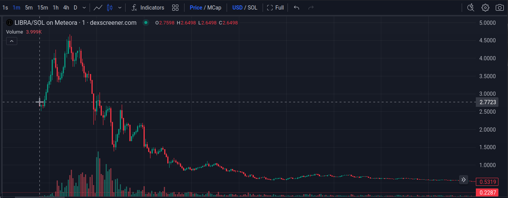
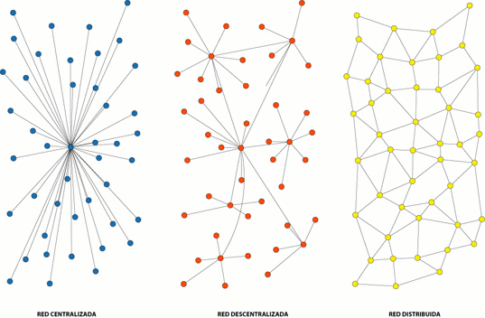
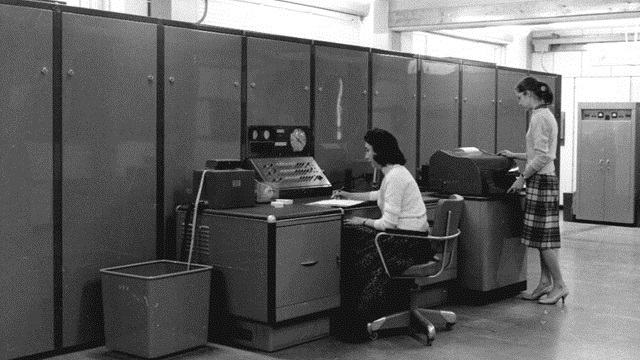

Columna de Informática - Yo no fui
Índice
- 1. Datos de la Columna
- 2. Columna 35: Criptomonedas y algo más
- 3. Columna 34: Deepseek
- 4. Columna 33: Pac-Man
- 5. Columna 32: Tetris (2da parte)
- 6. Columna 31: Tetris
- 7. Columna 30: Visita Verónica Dahl: IA inferencial generativa vs. IA basadas en big data
- 8. Columna 29: Más mitos de la informática
- 9. Columna 28: Gobernanza informática y mitos de la informática
- 10. Columna 27: Charlemos de informática
- 11. Columna 26: Firmas Digitales
- 12. Columna 25: IA y entrevista de Beatriz
- 13. Columna 24: Obsolescencia programada
- 14. Columna 23: Reconocimiento facial
- 15. Columna 22: ¿Qué es la nube? (cont.)
- 16. Columna 21: ¿Qué es la nube?
- 17. Columna 20: ¿Qué son los anti-virus?
- 18. Columna 19: ¿Qué son los virus?
- 19. Columna 18: ¿Qué es la dark net y la dark Web?
- 20. Columna 17: ¿Qué es el hacking?
- 21. Columna 16: ¿Qué es el Software Libre?
- 22. Columna 15: ¿Qué son las redes sociales?
- 23. Columna 14: ¿Qué es el Digital Cloning y el DeepFake?
- 24. Columna 13: ¿Qué es la minería de datos?
- 25. Columna 12: ¿Qué es la Web?
- 26. Columna 11: ¿Qué es Internet?
- 27. Columna 10: ¿Qué es el voto electrónico? Parte 2
- 28. Columna 9: ¿Qué es el voto electrónico?
- 29. Columna 8: ¿Qué es el blockchain?
- 30. Columna 7: ¿Qué es la soberanía tecnológica? (¿y por qué es importante?)
- 31. Columna 6: Manuel Sadosky, «IBM go home» y más - 2da parte
- 32. Columna 5: ¿Quién fue Manuel Sadosky?
- 33. Columna 4: ¿Qué es el filtro burbuja?
- 34. Columna 3: ¿Qué es un algoritmo?
- 35. Columna 2: ¿Quién fue Alan Turing?
- 36. Columna 1: ¿Quién fue Ada Lovelace?
- 37. Consideraciones en el desarrollo del documento
- 38. Licencia de esta obra
- 39. Código fuente
Control Y es una columna que se emite cada dos viernes a las 15:00 por Radio Universidad CALF (FM 103.7) de Neuquén. Parte del Proyecto de Extensión «FaIComm: Charlando Sobre Informática», de la Facultad de Informática, Universidad Nacional del Comahue.
En esta página se encuentran los guiones y la bibliografía utilizada en la columna. También, puede encontrar los recortes y la fecha de emisión para volver a escucharlas por RadioCut.
⚠️ Las columnas están ordenadas de manera inversa: la más reciente primero.
Está página se encuentra disponible en los siguientes formatos:
- HTML:
- Org-mode:
- RSS para agregadores (p. ej.: la App CapyReader):
![[Valid RSS]](valid-rss-rogers.png "Validate my RSS feed")
1. Datos de la Columna
- Título
- Columna infogrmática de Yo no fui.
- Sinopsis
- Aprender qué es la informática y los conceptos necesarios para entender el día a día de lo que sucede alrededor de la computadora. Explicaciones de hechos pasados y presentes relevantes para comprender lo que sucede a nuestro alrededor.
- Tema
- Informática
- Recorte
- Conocimiento general de la informática
- Enfoque
- Conceptos y curiosidades de la informática. Explicaciones de noticias actuales del tema.
- Audiencia
- Mayores de ~12 años, con conocimiento mínimo de la informática.
- Identidad Sonora
- Alegre, amena.
- Género
- Columna narrativa. Debates o entrevistas cortas.
- Formato
- Debate de 20’.
- Estructura
- Columna con introducción, desarrollo y conclusión.
- Introducción motivada por una pregunta disparadora (P. ej. ¿qué es un algoritmo?)
- Desarrollo con posible intervención de la personas presentes en el piso.
- Conclusión que ofrezca una pregunta o moraleja para el público.
- Alojamiento
- Vivo por radio Universidad CALF 103.7 Mhz (FM). Internet como recorte de la columna.
- Distribución
- Radio en vivo. Es posible distribuir por Spotify, RadioCut, página Web personal, open.audio u otra plataforma Funkwhale. Posiblemente, redes sociales (Mastodon y privativas).
- Identidad gráfica
- -
- Licencia
- Creative Commons + Reconocimiento + Compartir Igual 4.0 Internacional (CC-by-SA): http://creativecommons.org/licenses/by-sa/4.0/ Ante modificaciones, se debe especificar la obra original y sus autores.
2. Columna 35: Criptomonedas y algo más

Figura 1: Registro de cotización de la moneda $LIBRA en dexscreener.com
⚠️ Con este tema, me meteré en un terreno pantanoso para mí: el de las finanzas y mercados. Es algo muy poco explorado y que solo pude leer conceptos (para mí avanzados) en pocos días. Recomiendo encarecidamente que quien le interese saber más, consulte con un especialista en finanzas y economía. En esta columna, solo exploraremos el impacto de introducirse en el mundo de las criptomonedas con escaso conocimiento.
«Querés ser millonario sin esfuerzo y con poco estudio, probá nuestros curros… digo cursos…» (⸮)
¿Se han encontrado con videos donde prometen que ganás mucha plata con poco esfuerzo?
Muchos de estos videos apuntan a jóvenes y adolescentes.
En muchos casos, usan las criptomonedas como base. Si bien, invertir en criptomonedas puede ser sencillo, es importante conocer bien este mundo y los conceptos y teorías que lo rodean antes de invertir plata.
¿Recuerdan el consejo que les dí cuando hablamos de blockchain y criptomonedas?
La criptomoneda es una moneda descentralizada: sin bancos, ni entidades en el medio entre los usuarios.
Blockchain es un libro contable distribuído. Piensen que una transacción ya dentro de la blockchain, no se puede cambiar. Es público.
¡No inviertan si no conocen bien de qué se trata!
Veamos por qué se los decía…
¿Qué deberíamos conocer antes de invertir?
⚠️ Ojo, no quiero decir que si saben todo esto, serán expertos inversores/brokers. Considero que es bueno consultar y educarse con alguien especialista en el tema de finanzas y economía.
Algunos conceptos financieros: market maker, bonos, acciones (stock), mercado, bolsa, agentes (brokers o stockbroker), liquidez, renta fija, renta variable, capitalización del mercado/valor en bolsa (market cap).
Market Maker: entidad que ofrece liquidez y fluidez siempre manteniendo disponible. Ofrecen un precio de venta y compra para activos y obtiene beneficio con la diferencia de estos precios.
Algunos conceptos del mundo de las criptomonedas: blockchain, Proof of work, proof of stake, stablecoin, smart contract, decentralized finance, decentralized exchange (DEX), centralized exchange (CEX), automated market maker, pool de liquidez, DApp.
Está bueno conocer cómo funcionan las tecnologías computacionalmente… pero ¿por qué funcionan así? ¿cómo se usan correctamente? ¿qué intenciones y objetivos tienen? ¿qué impactos éticos y sociales tienen?
¿Cómo sería un AMM?
Es un market maker pero con Smart contract + Liquidity pool. Como es un programa hay varias formas/técnicas de implementarlos.
Ejemplo: criptomoneda DAI, cuya idea es sostener su precio a 1 dólar (1 DAI = 1 Dólar). Funciona bajo Ethereum.
La idea es hacer transacciones entre pares, sin utilizar un libro de órdenes. Se utiliza un algoritmo (por ejemplo, una fórmula matemática) para calcular los valores de compra y venta.
¿Qué sería un Token DEX?
Hay criptomonedas que no poseen su propia blockchain, sino que utilizan otra ya existente.
- Caso Ethereum DAO: 2016 una vulnerabilidad fue aprovechada por un hacker el cual robó DAO tokens. Se creó una copia de los blockchains.
Peculiaridad de Solana: no se pueden leer ni estudiar el código fuente de los smart contracts.
En Ethereum sí es posible.
2.1. Recursos
«¿Qué es un Automated Market Maker (AMM)?». 7 de octubre del 2020 y actualizado el 9 de junio del 2023. Binance Academy.
https://academy.binance.com/es/articles/what-is-an-automated-market-maker-amm
«¿Qué es un Exchange Descentralizado (DEX)?». 27 de septiembre del 2020 y actualizado el 25 de octubre del 2024. Binance Academy.
https://academy.binance.com/es/articles/what-is-a-decentralized-exchange-dex
- https://academy.binance.com/es/articles/what-s-the-difference-between-a-cex-and-a-dex
- https://academy.binance.com/es/articles/what-is-an-ido-initial-dex-offering
- https://www.dexlab.space/mintinglab/spl-token
- Conceptos: Smart Contract, Decentralized Finance (DeFi), Decentralized Exchange (DEX), Market maker, Automated Market Maker (AMM), Stablecoin,
3. Columna 34: Deepseek
📻 Emisión al aire:
- ¿Qué es DeepSeek?
- Es una empresa situada Hangzhou en China. Se encarga del desarrolo de software IA, particularmente Large Language Models (LLM).
- Liang Wenfeng fundador de la empresa.
- Es graduado de la Universidad de Zhejiang, una universidad nacional.
- El DeepSeek R1 es el chatbot (modelo + software) creado por esta empresa.
- Básicamente, es un programa y un conjunto de datos llamado modelo. El modelo es lo que «aprendió», se entrena con muchos datos para que se modifique y se adapte a ellos.
- Es lo similar al ChatGPT, un chatbot con IA del tipo que simula un ser humano.
- Se dice que es comparativamente igual en potencia a los existentes y a la última versión ChatGPT o1.
- Aunque no hay una una comparación concreta aún.
- ¿Qué tiene de interesante?
- La empresa dice que el software es Open Source, y el modelo se creo con un costo de $6 millones contra $100 millones que supuestamente costó GPT-4.
- Utilizó menos recursos: la empresa indica que utilizó 2.000 chips Nvidia A100 y miles de menor calidad adquiridos antes de la prohibición.
- Porque hay una prohibición de EEUU de vender tecnología de avanzada a China.
- Utiliza una estrategia de uso de memoria más efectivo. Esto hace que requiera menos memoria RAM.
- Es posible descargarse el modelo y el software y utilizarlo localmente, off-line. ChatGPT y otros no.
- Incluso puede funcionar en Android! (ver Sección Recursos).
- ¿Cómo afecta DeepSeek R1?
- Al utilizar menos recursos y decrementar tanto los costos hace que otras empresas deban justificar mejor sus inversiones.
- Pone en duda si es cierto que la única forma de mejorar la IA producida es con más coston y más cantidad de chips.
- Nvidia cayó su mercado un 17% antes de recuperarse al día siguiente. De ser la más valuada cayó a ser la tercera.
- La industria y el gobierno chino se «fortalece» puesto que se independiza aún más en desarrollo de IA: comprende que puede innovar en IA.
- El gobierno chino fomentó el desarrollo e investigación de la IA con becas, ayudas a la investigación y la interrelación entre universidades y la industria.
- Recordemos el contexto en que Tik Tok está en conflicto en EEUU, y hay tensión por aranceles económicos entre estos los países. Además, de la restricción de la venta de tecnología avanzada de EEUU.
Como mencioné que el gobierno chino fomentó con becas y ayudas, etc. ¿Cómo se relaciona el gobierno o el estado con la innovación y la investigación?
¿Cómo les parece que la educación y la inversión del gobierno/estado ayuda a las empresas?
¿Qué opinan acerca del rol de las universidades en la competencia tecnológica?
Vieron que EEUU impuso restricciones a la venta de tecnología a China: ¿qué piensan de la dependencia o independencia tecnológia y su importancia en un país? ¿por qué les parece que ambos países buscan el primer puesto o la mayor indenpendencia posible en estos avances?
3.1. Recursos
El chatbot se encuentra disponible en su sitio oficial: https://chat.deepseek.com/
Requiere registrarse con correo electrónico.
"DeepSeek-R1 Release por DeepSeek.
Noticia que revela la versión R1 de la página oficial.
Repositorio con la documentación, links y detalles del DeepSeek R1 por DeepSink.
Se encuentra un link para descargar los distintos modelos, material de referencia científica, resultados de evaluación, etc.
- «DeepSeek: The Chinese AI app that has the world talking» por Kelly Ng, Brandon Drenon, Tom Gerken y Marc Cieslak. BBC News. 4 de febrero del 2025.
- «DeepSeek: cómo los »héroes de la IA« de China superaron las restricciones de EE.UU. y desafiaron a Silicon Valley» por Fan Wang y João da Silva. BBC News. 1 de febrero del 2025.
«Instalar DeepSeek en local en Android no es fácil, pero funciona perfectamente». Ivan de Linares. Xataca Android. 4 de febrero del 2025.
Muestra cómo instalar DeepSeek en Android usando Termux, una terminal para estos sistemas.
4. Columna 33: Pac-Man
📻 Emisión al aire:
Algunas noticias:
- Mark Zuckerber anuncia que el sistema anti-fake de facebook será desmantelado y utilizará el mismo sistema que X de «notas de comunidad».
▶️ Entrevista en Yo No Fui a Olivia Sohr (directora de impacto y nuevas iniciativas de chequeado.com) acerca del fact-checking en Meta. Jueves 9/1/2025.
- Elon Musk critica al «consejo editorial» Wikipedia de no ser neutrales (cuando el contenido es editado por usuarios convencionales) y que por ello, incentiva a que dejen de donar hasta que se reequilibre.
- Si se piensan mudar o empezar a probar, recomiendo Mastodon que es muy similar a Threads y Bluesky. De hecho usan el protocolo ActivityPub que es el que utiliza Mastodon para intercomunicarse.
Pac-man:

Figura 2: Arcade en Guildford, Reino Unido (2016).
- Estamos en 1974, Namco adquiere Atari Japan, la división japonesa de Atari. Nakamura, presidente de Namco (de ahí el nombre de la compañía) crea video juegos y los distribuye por japón. Entre el pequeño equipo de desarrollo se encuentra Toru Iwatani, que en 1978 desarrolla varios juegos de gran venta.
- Pongamos en contexto: épocas de arcade y monedas, había que acercarse a locales con grandes máquinas de juegos. Los juegos disponibles eran Asteroids, Galaxian, Lunar Lander, Atari Football, Space invaders, Sprint 2, Sea Wolf. Todos juegos de guerra o deportes. Está más que claro cuál era el público que mayormente iba a los arcades.
- Iwatani siente que los arcades se convertían en un ambiente no tanto agradable para la familia. Los gráficos crudos y los juegos un tanto violentos no colaboran a cambiarlo. Por eso decide crear un videojuego sin violencia, alegre, que incentive a las mujeres y parejas a acercarse a los arcades.
- Piensa en fashion y en comidas, recuerda bien que a las chicas de su país les gusta los postres, entonces trata de llevar todo el concepto del juego alrededor de comidas: un personaje, con forma de pizza, comiendo a su paso.
- El personaje principal Pac-man, es rendondo como una pizza sin un pedazo. Aunque, también Iwatani dice que se parece al kanji «kuchi» (口) que significa «boca», pero redondeado.
- Agrega unos fantasmas con colores brillantes pasteles y ojos expresivos, para que sean más atractivos. Se inspira en Casper y un manga, aunque los utiliza como los rivales porque se acostumbraba así para las animaciones.
Los fantasmas son:
- Blinky, el rojo que persigue al personaje principal.
- Pinky, el rosado trata de cercarlo yendo unos pasos adelante de Pac-man.
- Inky, de cian, también trata de cercarlo.
- Clyde, de naranja, lo persigue o se aleja aleatoriamente.
La idea es que no sea aburrido, pero imposible de jugar.
- Suma también cerezas y otras frutas como bonus, que también son atractivas: sus figuras son similares a las de las máquinas tragamonedas. Además, marcan el nivel actual.
- En cuanto al sonido, Iwatani demuestra cómo le gustaría que fuera a Toshio Kai, su compositor, comiendo y haciendo ruidos de tragar
- El tablero es un laberinto. Ya existían de este tipo de juegos de perseguir en laberintos en el 79’.
- El nombre del juego fue «Puck man», por la forma a disco de hockey. Aunque, Iwatari dice que es por «paku paku taberu» («puck puck» o «Pakkuman»), que es la expresión de tragar o masticar. Al liberarse el juego en inglés, se decidió cambiar por Pac-man para evitar que vandalicen la P de Puck convirtiéndola en una palabra «obscena».
Preguntas:
¿El mercado de los video juegos y la computación sigue buscando la inclusión familiar?
4.1. Recursos
«This Is What Pac-Man‘s Creator Thinks 35 Years Later». Por Matt Peckham. Times. 2015.
«Q&A: Pac-Man Creator Reflects on 30 Years of Dot-Eating». Por Chris Kohler. Wired. 2010.
https://web.archive.org/web/20190712174728/https://www.wired.com/2010/05/pac-man-30-years/
«Five Things You Never Knew About Pac-Man». Por Chris Morris. CNBC.com. 2011.
https://www.cnbc.com/2011/03/03/five-things-you-never-knew-about-pacman.html
- Pac-Man Arcade (1980) emulador para jugar: https://archive.org/details/pacman_mame_2
- «Meta ha dedicado mucho tiempo y dinero a construir su sistema anti-fake news. Ahora va a desmantelarlo por completo». Por Javier Lacort. 7 de enero de 2025. Xataka. https://www.xataka.com/aplicaciones/meta-ha-dedicado-mucho-tiempo-dinero-a-construir-su-sistema-anti-fake-news-ahora-va-a-desmantelarlo-completo
- «Qué son las notas de la comunidad en redes sociales, cómo funcionan, y cuáles son sus ventajas y desventajas». Por Yúbal Fernández. Xataka. 8 de enero del 2025. https://www.xataka.com/basics/que-notas-comunidad-redes-sociales-como-funcionan-cuales-sus-ventajas-desventajas
- «¿Elon Musk tras Wikipedia? Ofrece un billón de dólares para cambiar su nombre». Semana. 27 de diciembre del 2024. https://www.semana.com/mundo/articulo/elon-musk-tras-wikipedia-ofrece-un-billon-de-dolares-para-cambiar-su-nombre/202426/
- «Wikimedia España, asociación de editores de Wikipedia, responde a los ataques de Elon Musk: “Demuestra ser un total ignorante sobre cómo funcionamos» por Jordi Sabaté. Eldiario.es. 31 de diciembre del 2024 y actualizado el 2 de enero del 2025. https://www.eldiario.es/cultura/wikipedia-espana-responde-ataques-elon-musk-demuestra-total-ignorante-funcionamos_1_11933755.html
Foto de Mitch Altman obtenido desde Wikimedia Commons bajo licencia Creative Commons Genérica de Atribución/Compartir-Igual 2.0. Ir a la página original.
5. Columna 32: Tetris (2da parte)
📻 Emisión al aire:
Quedamos en que el Tetris fue descubierto por un empresarió húngaro, Robert Stein y quiso obtener los derechos por medio de un fax a su creador Alexey Pajitnov.
Pero el juego nació detrás de la cortina de hierro, por lo que toda investigación y producción hecha en el instituto de investigación donde trabajaba Pajitnov no debía ser vendida.
Aún así, Stein logró negociar con Mirrorsoft (UK) y Spectrum Hollobyte (USA), y comenzó su venta en Estados Unidos y Europa en 1988.
Pero Stein no firmó con la Unión Soviética, y solo tenía un fax como documento que certificaba la licencia.
Al final, Stein tuvo que negociar con Elorg (Elektronorgtechnica) en 1988, mientras que Pajitnov ignoraba las ventas en el exterior que ya comenzaron y no recibió ningún porcentaje por ellas.
El negocio con Elorg fue conceder la licencia por 10 años para sistemas de computadoras.
Al mismo tiempo, Henk Rogers buscaba juegos para el mercado japonés. Consiguió obtener el de Tetris para Famicom desde Atari, junto con otras empresas.
Nota de color: Famicom es conocido como «Family Game» acá (sí, «el family») o Nintendo Entertainment System (NES) en ciertos lugares.
- Pero Stein retenía la licencia para computadoras, y Elorg aún no sabía de las negociaciones y no recibía su porcentaje. Y Tetris ya era un éxito en Norteamérica, Europa y Asia.
Nintendo estaba por lanzar la Game Boy y Rogers, que era cercano a Hiroshi Yamauchi, presidente de esa empresa, quería conseguir los derechos.
Intentó negociar con Stein pero solo recibió una respuesta negativa y evasivas.
Por lo que se dirigió a las oficinas de Elorg sin invitación, y logró un acuerdo con su presidente de la entidad Nikolai Belikov.
Pero Belikov quedó asombrado al observar que tenía un cartucho de tetris de Famicom cuando él había pensado que la licencia estaba firmada solo para computadoras.
Rogers argumentó que adquirió los derechos para la Famicom por Atari.
- En el mismo momento, Stein y Kevin Maxwell, hijo del dueño de Mirrorsoft, estaban negociando también
Pajitnov se amigó con Rogers durante su estadía, y lo defendió ante sus contrincantes en Elorg. Así, Belikov decidió brindarle los derechos a Rogers para las consolas.
Pero, también envió a Stein una actualización del contrato con una cláusula indicando la definición de computadora como una máquina con teclado y pantalla, haciendo que no pudiera utilizar el juego para consolas.
De esta manera, diversificaba las ventas de distintas máquinas a distintas empresas.
Robert Maxwell, al recibir la noticia de que su hijo volvió sin los derechos del tetris, contactó a ministros de alto rango en el Kremlin para presionar a Belikov.
Belikov insistió en no cancelar con Nintendo argumentando que Elorg es beneficiaría más con Nintendo, que con Stein y Mirrorsoft.
- Comenzaba el juicio en San Francisco por los derechos del Tetris entre Atari y Nintendo: Atari debía demostrar que la consola Famicom era una computadora.
- Belikov recibió presiones y amenazas para pedir disculpas a Maxwell, pero en 1989, «tuvo la historia de su lado» [BBC], se caía la cortina de hierro con protestas y conflictos y el poder decaía en el este.
- En el juicio en San Francisco, se falló a favor de Nintendo y en contra de Atari, Stein perdió la batalla y Atari tuvo que guardar miles de cartuchos.
Conclusión de la historia:
Game Boy fue un éxito y Tetris fue clave [BBC].
Un hecho intrigante, en 1991 aparece el cuerpo de Robet Maxwell en el Océano Atlántico, aparentemente se cayó de su yate. Dejó a Mirrorsoft endeudada.
Recién en 1996, Pajitnov pudo ganar dinero ya que el estado revirtió los derechos del juego. También, es co-propietario de The Tetris Company junto a Rogers.
Elorg fue vendida a The Tetris Company en 2005.
Con esto entra en debate:
- ¿Cuál es la importancia de que el software posea propiedad intelectual?
- ¿Es importante conocer un poco el concepto de propiedad intelectual y patentes?
6. Columna 31: Tetris
📻 Emisión al aire:

Figura 3: Primera versión del Tetris (1985).

Figura 4: Versión DOS del Tetris (1986).
- Los videosjuegos nacen cerca de los 50’. Nace Spacewar! en 1962, Pong por Atari en 1972 como arcade y luego como consola hogareña.
- Desarrollado por Alexey Pajitnov, ingeniero en computación en el Centro de Cómputos de la Academia de Ciencias de la Unión Soviética.
- El tetris nació en la USSR en el 1985 (desarrollado durante el 1984). Aparentemente el nombre surge de una mezcla entre «tetra» y «tennis» (el deporte favorito de Alexey).
La idea surgió por un juego favorito llamado Pentominó («penta» + «dominó), básicamente como un »tangram" pero con figuras armadas con 5 cuadrados.
Alexey le gustaba hacer rompecabezas matemáticos [BBC].
Se dice que lo escribió en el lenguaje Pascal en la computadora Eletronika 60, elaboradas en la Unión Soviética en Voronezh desde 1978.

Figura 5: Elektronika 60M
Básicamente, Alexey jugaba al tetris en el trabajo, lo que le llevó a pensar que era un gran juego [NPR]
La razón por la que «hipnotizó al mundo», según su creador Alexey Pajitnov, es porque apela al lado de la psique humana empeñado en la construcción en lugar de la destrucción. «Cuando juegas Tetris tienes la impresión de que estás construyendo algo. Tienes el caos que viene como piezas aleatorias, tu labor es ponerlas en orden. Pero apenas construyes la línea perfecta, desaparece. Sólo quedan tus errores, esos agujeros horribles, y eso te lleva a querer corregirlos», le dijo a la BBC.
– [BBC]
Luego, se adaptó el juego a Turbo Pascal para IBM PC por un chico de 16 años Vadim Gerasimov (trabajó en Google y obtuvo un PhD en MIT).

Figura 6: La IBM PC.
- El juego se empezó a copiar por todo el Centro de Cómputo, y luego de portarlo a IBM, por la URSS. Se copiaba de disquete en disquete pues la noción de propiedad intelectual no existía.
Un empresario húngaro, Robert Stein descubrió el juego y quiso obtener los derechos para su compañía. Cuando se contactó con Pajitnov, le propuso U$S 12.000, y aceptaron negociar.
Desgraciadamente, utilizaron Fax, el cual se podía considerarse como un acuerdo legal en occidente, con lo que Stein entendió aceptado y comenzó a buscar companías para producir.
7. Columna 30: Visita Verónica Dahl: IA inferencial generativa vs. IA basadas en big data
📻 Emisión al aire:
Contar el resultado de ChatGPT ante la pregunta de Pablo Frizán si existe el tango «Papafritas con mostaza».
Se me vino a la cabeza la visita de Verónica Dahl a Neuquén.
- Hemos visto qué era la IA como el ChatGPT, pero, ¿hay otras IA? ¿qué alternativas hay?
- Charla de Dra. Verónica Dahl en nuestra facu: ¿quién es?
- Informática y teórica argentina-canadiense.
- Co-fundadora de la disciplina de programación lógica junto con otras 14 personas.
- Nos visitó y nos brindó dos charlas el lunes 27/10 y martes 28/10.
- IA basada en big data
- ChatGPT y Large Language Models (LLM).
- Se basan en patrones mayormente
- Requieren ser entrenados para buscar esos patrones.
- IA inferencial
- Utiliza lógica y razonamiento formal.
- Su entrenamiento es brindado por el programador.
¿Diferencias?
- IA basada en big data
- Contra: son cajas cerradas
- No sabemos cómo obtiene el resultado.
- Reemplaza inferencia por consenso.
- Contra: se entrena con fuentes de… ¿quiénes?
- ¿De dónde obtiene la información? ¿Tendrá permiso?
- Necesita grandes volúmenes de datos
- ¿Afecta al ecosistema? ¿habrá sesgo en los datos?
- Solo quienes tengan grandes computadoras pueden procesarlas.
- Contra: lo que genera, ¿será de buena calidad? ¿será correcto?
- Se requiere de alguien que corrija ante errores graves → ¿se le pagará bien?
- Remueve mano de obra que realiza trabajo de buena calidad por una IA cuyo trabajo puede equivocarse.
- Una operadora puede contestar ante cualquier pregunta si es humana, una IA puede no contestar lo que se desea.
- Contra: son cajas cerradas
- IA Inferencial:
- Pros: utiliza lógica para generar un resultado.
- ¡Se puede explicar todo el proceso!
- Es deducción pura y se puede comprender cada paso.
- Es altamente confiable en la respuesta.
- Pros: funciona con diversos volúmenes de datos, no necesariamente grandes (aunque también puede ser utilizada en big data).
- Contra: 🤔… será… ¿aprender Prolog? ¿estudiar IA o Ciencias de la Computación?
- Pros: utiliza lógica para generar un resultado.
Preguntas:
- Después de practicar con ChatGPT: ¿Quiénes hacen un mejor trabajo las IA de big data o una persona?
- ¿Quiénes utilizan a quién? ¿La IA nos utiliza para entrenarse o los humanos utilizamos la IA?
- En cada tarea que puedan pensar: ¿Se imaginan si se reemplaza al ser humanos por una IA en esa tarea? ¿sería mejor o peor? ¿y si dejamos un ser humano que chequée el resultado? ¿y si no? ¿cuál es el riesgo de que falle o no responda como queremos?
- ¿No les pasó hasta el momento que un robotito o una IA no les responde como hubieran querido?
7.1. Recursos
8. Columna 29: Más mitos de la informática
📻 Emisión al aire:
- Cualquier hacker puede decir: «Dame un minuto para entrar en la NASA y te muevo el telescopio Hubble para… [inserte su justificación aquí]»
- Primero: no se llaman «hackers». Ver The meaning of «hack» - The Jargon File.
- Segundo: no es fácil de acceder remotamente a una computadora sin la autenticación ni la autorización adecuada.
- Para arreglar la compu tenés que reinstalar el sistema operativo.
- No es necesariamente así, pero a veces, si es el software falla, es la solución más sencilla y efectiva.
Lleva muchísimo tiempo buscar la causa del problema y arreglarla
Cuando decimos «muchísimo», nos referimos desde horas a días…
- Es necesario conocer el sistema completo y cada componente para hacerlo.
- Debemos contestar si: ¿habrá sido un programa o fue algo que el/la usuaria hizo para causar el problema?
- Recordemos que es normal que las cuentas sean administradoras en compus personales.
- La persona que se dedica a reparar, tiene conocimientos de hardware y software, más su propia experiencia.
- A veces, sus vivencias le ayuda a detectar el problema y repararlo.
- Recomendamos:
- Llevar la compu y el celular a una persona de confianza, porque nuestros datos y nuestra vida privada están en ese dispositivo.
- Hacer copias de seguridad cada tanto (¿una semana? ¿un mes?) para mitigar la pérdida de información.
- Comentar a quien repara qué es lo que pasa con el mayor detalle posible. Sirve sacar una foto o una captura de pantalla cuando sucede el problema.
- Preguntar sin miedo y consultar cualquier duda que se tenga.
¿Me arreglás la impresora? / ¿Me arreglás la compu?
Ojo con pedirle a una persona que sabe de informática esto… ¡no necesariamente sabe arreglarlas!
Hay ocupaciones que se especializan en algo más tendiente al software (programación, diseño gráfico, desarrollo Web, desarrollo de bases de datos), y no tanto al hardware.
En Linux y Mac no hay virus.
Sí hay virus. Pero se encuentran mucho menos que en Windows.
- La diferencia es en Windows, hay una mezcla de justificaciones de por qué hay más virus:
- ¿Cuánta gente utiliza Windows?
- ¿Configuraron alguna vez el usuario y la clave o son administradores?
- Decisiones de diseño diferentes:
- Deberían utilizar una cuenta no administradora.
- ¿Se acuerdan del autorun?
- ¿Swap en el sistema?
- El control total del sistema es más difícil:
- Hay que hacer ingeniería inversa para conocer cómo está hecho efectivamente: ¿estará permitido hacer eso?
- No podemos modificar el sistema para que se adecúe a lo que queremos.
- Entonces, es más difícil que gente interesada ayude colaborativamente a mejorar el sistema o crear herramientas para controlarlo.
- La diferencia es en Windows, hay una mezcla de justificaciones de por qué hay más virus:
- El modo incógnito de los exploradores Webs te hacen invisible en Internet.
- No, solo borra el historial, las cookies (y las sesiones), la caché (imágenes, fuentes, videos y páginas descargadas para ahorrar tiempo). No anonimiza la visita al sitio Web.
- Sacar el pendrive sin expulsarlo desde el sistema operativo borra su contenido.
- No necesariamente.
- Es necesario desfragmentar el disco duro cada tanto.
- Un archivo muy grande se fragmenta para guardarse: se separa en pedazos y se guarda en el primer espacio en blanco más cercano.
- En discos rígidos magnéticos lleva tiempo buscar un fragmento: son discos que giran a gran velocidad, un cabezal lecto/escritor que debe llegar hasta el lugar, etc. ¡Mucho movimiento mecánico!
- Pero, en discos sólidos, esto no es así: simplemente darle la dirección y obtenemos el fragmento… ¡no hay movimiento mecánico!
- Programar es para iluminados.
- Programar utiliza ingenio y creatividad.
- El mejor lenguaje de programación es el más nuevo.
- No es tan así. Es más una moda.
- C se sigue utilizando mucho y es un lenguaje con gran performance, pero apareció en 1972.
- Ada es un lenguaje altamente robusto, y
- Los lenguajes se actualizan: C11, C17 y C23; del año 2011, 2018 y 2024 respectivamente.
9. Columna 28: Gobernanza informática y mitos de la informática
📻 Emisión al aire:
- Me quedó pendiente de la columna anterior: Gobernanza digital. ¿Un repaso?
- Hablamos de la importancia de aprender informática para entender las noticias y lo que nos sucede.
- Palabras claves que dijimos: «dependencia tecnológica», «neutralidad tecnológica».
- La importancia de aprender y de que la sociedad pueda generar profesiones.
- Aclaramos que la adiquisición de tecnologías no es suficiente: necesitamos el conocimiento de usarla como se debe y para debatir su uso.
Hablemos un poquito de de Gobernanza Digital. ¿Conocen alguna de estas organizaciones?
Internet Gobernance Forum (IGF), Internet Engineering Task Force (IETF), World Wide Web Consortium (W3C), Internet Assigned Numbers Authority (IANA), Internet Corporation for Assigned Names and Numbers (ICANN).
Nacional:
Dirección Nacional del Registro de Dominios de Internet (NIC Argentina)
¿Qué hacen? ¿son importantes?
La IETF y W3C toman decisiones en cuanto a cómo se implementa y cuál es el objetivo del Internet. Si se utiliza alguna tecnología, si se puede incluir algún material en una página, de qué formato, accesible o no, etc.
Ej.: dicidieron cómo es el formato y cómo funciona el correo electrónico.
¿Argentina participa? ¿tenemos representantes o participantes de nuestro país?
https://datatracker.ietf.org/stats/meeting/105/country/
Sí, 3 en la IETF vs 5 de Brasil, 91 Canada, 94 China, 227 UE, 55 Japón, 511 Estados Unidos…
- ¿Qué sucede más acá?: decisiones decisiones…
¿Se acuerdan de la AI Act de la comisión Europea? ¿quiénes armaron la IA Act?
Si acá en latinoamérica decidieran hacer una IA Act, o si en Argentina lo hicieran, ¿quiénes participarían? ¿qué clase de formación necesitarían?
- ¿Cómo nos afecta si no tenemos representantes formados?
- Dependencia tecnológica
- «Neutralidad» tecnológica y de la red
Mitos y verdades:
"Adiós Meta AI. Tenga en cuenta que un abogado nos ha aconsejado poner esto en nuestro perfil si no lo hacemos, puede tener consecuencias legales. Como Meta es ahora una entidad pública, todos los miembros deben publicar una declaración similar. Si no publicas al menos una vez, se asumirá que eres okay con ellos usando tu información y fotos. No doy permiso a Meta ni a nadie más para usar ninguno de mis datos personales, información de perfil o fotos.
NO DOY PERMISO"
«Si no reenviás a 10 contactos tendrás [inserte algo malo aquí]»… corten las cadenas, son bromas, falsedades y desinforman.
- «Un buen hackers entra a tu computadora de afuera, desde su casa o desde la calle, cuando tiene gana y sin preparación alguna.»… ¡No vivimos en una película de Holliwood!
Todos los que estudian o estudiaron algo de computadoras saben reparar impresoras…
Si desean evitar la ira de los desarrolladores, administradores e informáticas/os en general, mejor pregúntenle si conocen a una persona que repare impresoras, ¡antes de pedirles directamente que las reparen!
Existen varias carreras de pregrado, grado y posgrado, si bien tienen muchos conocimientos en común, no siempre es la reparación el fin de esos conocimientos. También, tienen orientaciones específicas. licenciaturas en ciencias de la computación, licenciaturas en sistemas informáticos, ingenierías en sistemas, analistas de sistemas, etc.
También, existen muchas especialidades en la informática y la computación: desarrolladores de software, administradores de servidores, diseñadores gráficos, gestores que se especializan en cierto tipo de software, reparadores de PC, reparadores de celulares, desarrolladores de videojuegos (y sus muchas sub-especialidades), analistas y diseñadores de software, desarroladores Web de frontend y de backend (y full-stack), diseñadores de bases de datos, y muchas otras más…
- El modo incógnito de los exploradores Webs… no, ¡no te convierte en anónimo!
- «Tu compu está lenta… entonces tiene virus»
10. Columna 27: Charlemos de informática
📻 Emisión al aire:
Hoy hacemos un repaso de la columna, y también de algunas noticias que se me vienen escapando…
- « “Un ataque sin precedentes”: cómo ocurrieron las explosiones de beepers y walkie-talkies que han dejado decenas de muertos y miles de heridos en Líbano» artículo de la BBC News del 18 de septiembre del 2024.
«Brasil ordena cerrar X ante la negativa de Elon Musk a bloquear perfiles por orden del juez» artículo de El País del 30 de agosto del 2024.
No es el primer intento de Brasil de bloquear una plataforma digital. Hay otro:
- «Un juez ordena bloquear Telegram en Brasil por no colaborar en una investigación contra grupos neonazis» artículo de El País del 26 de abril del 2023.
- «España le prohíbe a Meta su nueva actualización con funciones electorales y esta fue la sorpresiva respuesta de la empresa» artículo de El Cronista del 31 de mayo del 2024.
AI Act. Comisión Europea.
¿Se acuerdan de un episodio anterior, donde hablamos de IA?
¡Se viene la evaluación! ¡A hacer memoria de los programas anteriores! jaja.
Cuando leyeron el titular, ¿qué impresiones tuvieron al comienzo? ¿por qué? ¿qué significan?
Unas posibles opciones:
- «Uff, computadoras… no me interesa/es muy difícil»
- «¿qué es un… biiii-per?»
- «¡Sabía que Telegram/X/el juez son unos ambiciosos sin escrúpulos!» (o una expresión similar pero dicha muy vulgarmente…)
- «¡Qué avanzada la gente de Europa!» o «¡Qué atrasados estamos!»
- Nunca leí esas noticias o artículos.
- ¿Qué tiene de relación entre estos artículos?
- ¿Qué conocimiento se requieren para comprenderlos a fondo?
El artículo menciona que los beepers y walkie-talkies tuvieron que ser alterados accediendo al dispositivo.
¿Cuándo se dieron cuenta de esa observación? ¿dedujeron la justificación?
- Para armar un reglamento para IA, ¿qué conocimientos les parece que hace falta? ¿alcanza con haberla usado un par de veces? ¿a quiénes consultarían para que les asesore?
- Para aplicar lo que dice el juez, ¿qué hace falta? ¿quiénes deben llevarlo a cabo?
- Palabras claves: dependencia tecnológica.
- ¿Pudieron determinar responsabilidades?
- Vieron que tuvieron que bloquear Telegram y X en Brasil, «culpa de las redes sociales»… ¿o no?
- La red social X funciona gracias a programas. Esos programas fueron construidos por personas… Entonces, ¿los programas son neutrales?
- Palabras claves: «neutralidad» tecnológica.
- ¿Es necesario gente especializada para tomar esas decisiones o llevar a cabo los hechos que indican en las noticias? ¿es necesario personas especializadas para evitar y contrarrestar los riesgos y problemas?
- ¿Es necesario cierto nivel de tecnología y herramientas? ¿cómo se utilizaron las tecnologías para llegar a estas noticias/leyes?
- ¿Contemplamos algo de estas cosas en nuestras leyes? ¿tenemos conocimiento y personal trabajando en leyes y convenios internacionales?
- ¿Hay entidades que se dedican a planificar estándares y normas?
- ¿Hay personas o organismos que toman decisiones? ¿cuáles? ¿y en el exterior?
- Palabras claves: gobernanza digital.
- ¿Qué conocimiento se requieren para comprenderlos a fondo?
- De las cosas que hemos charlado en la columna, ¿recordaron algunas cosas mientras debatíamos de los artículos?
- Dependencia tecnológica: hablamos de la nube, ARSAT, ¿se acuerdan de «IBM go home»?
- «Neutralidad» tecnológica: hablamos de la dark net y dark Web, virus y antivirus, redes sociales, filtro burbuja y cámara de eco, etc.
Gobernanza digital: no hablamos mucho de los estándares, organizaciones internacionales que gestionan el Intenet, cómo se deciden los nombres de dominio, entre otros… ¿verdad?
¿Conocen algunos de estas organizaciones?
Internet Gobernance Forum (IGF), Internet Engineering Task Force (IETF), World Wide Web Consortium (W3C), Internet Assigned Numbers Authority (IANA), Internet Corporation for Assigned Names and Numbers (ICANN).
Nacional:
Dirección Nacional del Registro de Dominios de Internet (NIC Argentina)
- Seguro hay más palabras y conceptos claves… Pero por hoy, con estos alcanzan.
- ¿Qué podemos hacer?
- La tecnología se mueve a velocidades muy rápidas…
- Entonces… ¿vale la pena ponernos al día?
- ¡Pero las terminamos usando!
- ¡¡¡Jóvenes utilizan las tecnologías!!! → ¡Debemos aprender de forma obligada!
- ¿Aprender informática? → ¡Informarse!
- ¡Pero es difícil!… en realidad, es conocimiento que se acumula para más conocimiento…
- La tecnología se mueve a velocidades muy rápidas…
- Algunas preguntitas… 🤔
- ¿Solo alcanza con tener y usar las tecnologías?
- ¿Serviría una inversión en comprar una tecnología solamente?
- ¿Quiénes participan en facilitarnos las tecnologías? ¿el vendedor? ¿quién nos enseña a usarlas? ¿quién controla su buen uso? ¿quién las repara y las mantiene en funcionamiento?
- ¿Son preguntones? ¿Se han hecho preguntas como las que hicimos en esta columna? Si no… ¡vamos! ¡háganse preguntas!
- ¿Solo alcanza con tener y usar las tecnologías?
11. Columna 26: Firmas Digitales
📻 Emisión al aire:
- ¿Cómo harían para hacer un vale por una docena facturas en un papel?
- Primero escribimos el texto «A quién corresponda. Por la presente, quien posea este vale le corresponde una docena de facturas.»
- Ahora, fecha de validez y quién lo emite. «El presente vale, solo puede ser canjeado desde el 6 de septiembre del 2024 hasta 6 de octubre del 2024 inclusive. Atte. Meteoro, Virginia y Bomba.»
- Y ahora, ¿qué hacemos? ¿lo entregamos?
- ¿Pero y en la compu? → hacemos un archivo, escribimos lo mismo y…
- Y ahora, ¿enviamos el archivo?
- ¿Qué pasa si se copia? ¿se puede cambiar la fecha o una docena por dos?
- ¿Cómo evitamos que se modifique?
- Le incluimos una foto de una firma
- Ahora, ¿se puede copiar? ¿evitamos que se modifique?
- ¿Qué pasa si se edita la imágen?
- ¿Y si usamos una Firma Digital?
- ¿Qué es una firma digital?
- Informal: es un dato agregado que permite verificar la autenticidad del documento.
- ¿Cómo hacemos para saber si el vale cambió? (integridad)
- Esto se llama integridad
- Hay dos fórmulas matemáticas:
- Una que recibe un mensaje y nos retorna un valor «único» para ese mensaje.
- Otra que dado un valor y un mensaje, nos retorna si es correcto o no.
¿Cómo hacemos para saber que la firma es realmente de quien dice ser?
Básicamente, que otra persona haya firmado el vale por Mete.
- Esto se llama autenticidad.
- Se suma una clave secreta y una clave pública. La clave secreta solo lo tiene una persona y la pública puede verla todo el mundo. Así, las dos fórmulas serían:
- mensaje + clave secreta → valor «único» para ese menasje
- mensaje + clave pública + valor → si es correcta o no.
- En otro momento hablaremos de las claves públicas y privadas (cifrado asimétrico) y la revolución que esto generó.
- ¿Cómo hacemos para que Mete no me diga «yo no fui, yo no lo firmé»? (no repudio)
- la clave secreta y la clave pública están relacionadas.
- Si puedo autenticar que mensaje + clave pública + valor es correcta, ya es suficiente para indicar que en algún momento se utilizó la clave secreta… ¿y quién tiene la clave secreta?
¿Qué pasa si se copia? (double-spending problem)
Ops… … ¡lamentablemente no podemos evitar que lo copien!
Se podría usar un mecanismo diferente: Incluir en el texto un número por cada vale, y cuando se canjea, Mete guarda el número en una planilla propia.
¿Y si pensamos en un contrato o un documento público? 🎉 ¡No nos molesta que se copie! 🎉
- En resumen.. ¿Para qué sirve una firma digital?
- Integridad
- Autenticidad
- No repudio
- Consejos:
- Por las dudas, aclaramos de nuevo: no, la firma digital no es tu firma en papel escaneada.
- Las firmas digitales se tramitan en entidades registradas (en Argentina, se llaman «Autoridad de Registro», puede ser un banco, correo, universidad, municipio, etc.). Listado aquí.
- Si no estamos seguras/os cómo se utiliza y se preserva la firma digital, ¡consultemos antes de tramitarla!
- Hay varias etapas: primero para tramitar y obtener la firma, segundo usar la firma para firmar documentos, tres validar tus documentos firmados y de los otros.
- Al tramitar una firma digital, pueden darnos una contraseña, un archivo con la clave privada o un dispositivo (parecido a un pendrive).
- En Argentina hay dos opciones: por hardware con token o remota sin token.
- Por «hardware con token», se puede firmar cualquier archivos. Pero, para usarla, requiere un programa de terceros y un dispositivo (por lo que indica la página, debemos comprarlo).
- Por «remota sin token», solo se puede firmar PDF. Debemos entrar a una página, iniciar sesión y subir el PDF a firmar.
Nunca, jamás, damos nuestra contraseña para firmar digitalmente, compartimos la clave secreta, token o el dispositivo que nos entregan con la firma digital.
Una vez que nos entregan la contraseña o el hardware token, somos completamente responsables de su uso y cuidado.
- Si perdemos la contraseña, cambiemos por una nueva inmediatamente. Si perdemos el dispositivo, ¡es muy importante denunciarlo cuanto antes! Cualquier eventual, es importante consultar y denunciar cualquier irregularidad.
Bibliografía
12. Columna 25: IA y entrevista de Beatriz
📻 Emisión al aire:
Desarrollemos un poco más de la entrevista a Beatríz Busaniche. Charlemos un poco algunas cosas de lo que se dijo.
- No digamos «¡Esto a mí no me va a pasar!» porque… ¡La burbuja ya usa IA!
- Hoy en día, ¿el «algoritmo» no nos sugiere posts, música y videos personalizados?
- Para armar la burbuja, se está usando algún programa con nuestra información → ¿se estará usando IA?
¿Cómo haría el software para escanear perfiles?
- Pensemos nosotros cómo haríamos para escanear perfiles manualmente → ¡Stalking mode on!
- (Típica pregunta de informático:) ¿Se puede automatizar?
- ¿Pero qué información podemos acceder?
- ¿La información pública de…?
- ¿Y la información privada?
- Pero… ¿dimos consentimiento para todo esto?
- Pero, ¿si nos darían un mayor acceso?
Vemos que está relacionado con: Propiedad Intelectual, Ley de datos personales y privacidad.
- ¿Qué pasa con las fotos? ¿se escanean también? ¿cómo?
- Buscar patrones en las fotos
- Una computadora, ¿piensa? ¿comprende lo que ve?
- Ejemplos ejemplo…
- 2 + 2 = 4 … e IP + Fotos que publicás = ¡Ya sé quien sos!
- A veces un dato solo no alcanza para identificar las personas.
- Pero, ¿y si juntamos dos datos? ¿alcanza?
- Ver el Artículo 21, inciso f de la Ley 25.326: por eso es importante que informen cómo se asocian esos datos.
- Ver Reglamento UE 2024/1686 (12/7/2024).
- Capítulo II, Artículo 5, inciso d (perfil y delitos), e (reconocimiento facial) y f (emociones)
- Anexo III: Biometría, Infraestructuras críticas (incluye el gas, agua y luz), educación y distribución de personas.
- ¿Por qué no importa hacer un perfil falso?
Otra cosa que me dejó pensando, fue algo que dijo Beatríz, que no importa realizar perfiles falsos…
- ¿Qué sería hacer un perfil falso?
- Hacer una cuenta con publicaciones propias pero con un nombre falso…
- Hacer una cuenta con publicaciones diversas pero con nombre falso…
- De cualquier modo, entrarías en una clasificación.
- ¿A qué se refiere que es estadístico?
- Que tiene un margen de error: ¿qué pasa si se equivoca? ¿quién valida los resultados?
- ¡Son solo números! ¿Quién interpreta los resultados?
- ¿Cómo sería utilizar la IA correctamente?
- Se entrena… ¿qué información utiliza? ¿a qué datos se le indica que son correctos y cuáles no?
- Se evalúa… ¿responde adecuadamente? ¿cuál es su margen de error?
- Se interpreta… ¿por qué responde de tal forma? ¿por qué de otra?
- ¿Dónde se usa? ¿conlleva un riesgo? ¿qué riesgo hay si responde mal?
Preguntas:
- ¿Qué cosas publican? Cuando decimos «publican», ¿comprenden qué tan público es?
- ¿Tienen sus perfiles en privados?
- Me pregunto si pidieron permiso para publicar la foto donde aparece otra persona… 🤔
Recursos:
- Fundación Vía Libre posee varios artículos y proyectos.
- Ley 25.326 «Habeas Data» (Protección de datos personales)
- «Datos Personales» de Argentina.gob.ar (Versión archivada del 6 de diciembre del 2023, no se encuentra otra reciente en The Wayback Machine).
- Europa: https://digital-strategy.ec.europa.eu/en/policies/regulatory-framework-ai
- Alto riesgo: párrafo 46.
- Ver Capítulo III, Artículo 5, inciso d y e.
13. Columna 24: Obsolescencia programada
📻 Emisión al aire:
- ¿Qué es la obsolescencia programada?
- ¿Cuánto te dura un celular?
- ¿Qué pasa cuando se rompe el control remoto del tele?
- Fecha de vencimiento a lo que se compra, pero:
- Se diseña el producto para que dure poco tiempo
- Se rompe, se inutiliza o se torna difícil de utilizar
- Deja de estar «de moda»
- Es necesario repararlo o comprar uno nuevo
- Puede suceder que los repuestos tampoco estén disponibles
- ¿Cómo se presenta la obsolescencia en Hardware?
- Un aparto resulta en desuso porque:
- Se rompe y su reparación es costosa.
Su funcionalidad inicial se va reduciendo con el tiempo.
Por ejemplo: Botones que dejan de responder porque se gastan.
la durabilidad inicial se reduce
Por ejemplo: La batería se carga cada vez menos en poco tiempo.
Deja de estar «de moda».
Por ejemplo: Salió un nuevo celular.
Componentes de baja calidad.
Sin protecciones donde más se esfuerza (fusibles, aislantes de calor/electricidad, ventiladores, disipadores de calor, pasta térmicas, etc.)
Diseño del hardware incorrecto.
Por ejemplo: Utilizar componentes electrónicos de menor calidad, para tensión o corriente menores, cables de menor calidad, no incluir protecciones contra tensiones inesperadas, calor u otros inconvenientes.
- Un aparto resulta en desuso porque:
¿y en el Software?
Viene acompañado del hardware.
- Un programa deja de funcionar porque:
- El servidor no responde más (p. ej.: en juegos, servicios).
- La empresa no brinda más soporte (p. ej.: Adobe Flash, Java Applets).
- Programado para dejar de funcionar o remover funcionalidad a cierto tiempo.
No se ofrece compatibilidad hacia atrás:
¡me exige que deba comprar la última version del programa!
- Diseñado para que se degrade:
- Su diseño es complejo adrede (p. ej.: un programa que posee errores o se rompe a sí mismo)
- Su diseño no está pensado para la eficiencia que debe funcionar (p. ej.: tarda más debido a una elección del algoritmo o estructura de almacenamiento incorrecta).
Avances tecnológicos
Empujan al usuario a adquirir un nuevo software o hardware.
- Nuevos sistemas no poseen lo necesario (bibliotecas, hardware) para ejecutar programas viejos
Limitado a funcionar en nuevo hardware, no ofrece opciones para desactivar características avanzadas.
Por ejemplo: una nueva versión de un videojuego que requiere cierta computadora con una placa de video determinada para emular el movimiento del agua, blur y texturas de mejor calidad.
- Un programa deja de funcionar porque:
Digital Restriction Management (DRM)
Imponer restricciones que controla que se puede hacer con el software (programa, medios digitales).
¿Qué pasa si el software está diseñado para cierto hardware únicamente?
¿No es una restricción que necesitemos cierta computadora para usar el último sistema operativo?
¿Qué pasa si el hardware solo funciona con cierto formato únicamente?
¿Se puede usar otros formatos de audio en el auto?
El derecho a reparar
Que permitan legal y técnicamente reparar los dispositivos que compramos.
- ¿Qué es lo primero que genera la obsolescencia programada? → ¡Basura!
- ¿Qué pasaría si pudieramos reparar?
- Se alarga el tiempo de uso… ¡menos basura!
- ¡Se puede reutilizar componentes de dispotivos a descartar!
- ¿Qué necesitamos para reparar?
- Aprender, diseños, tecnología (soldadoras, etc.)
- ¡Repuestos!
- ¿Qué se está haciendo al respecto?
- Cibercirujeo
- Escuelas, universidades y personas con interés en recuperar y reciclar
- Preguntas
- Cuando pasa cierto tiempo, y se actualiza la compu: ¿no la notás más lenta? ¿y con respecto a otras?
- ¿Cuántas veces cambiaste de celular? ¿cuáles fueron las razones por que lo cambiaste?
- Si se rompió el cristal, ¿por qué no lo cambiaste?
- Si fue la batería…
- Si fue porque andaba lento… ¿por qué se tornó así?
¿Has llevado a reparar tu compu? ¿tu celu? pero si ambas son computadoras, ¿por qué se diferencian tanto?
⚠️ Por las dudas… ¿hacen back-up cada tanto de sus documentos importantes?
13.1. Recursos
- https://www.defectivebydesign.org/what_is_drm
- https://www.fsf.org/campaigns/fight-to-repair
https://www.sciencedirect.com/topics/computer-science/planned-obsolescence
Algunos artículos que hablan de obsolescencia programada.
- https://www.bbc.com/future/article/20160612-heres-the-truth-about-the-planned-obsolescence-of-tech
14. Columna 23: Reconocimiento facial
📻 Emisión al aire:

Figura 7: Eigenfaces utilizadas para reconocimiento facial. De AT&T Laboratories Cambridge.
Las Eigenfaces son «características que resaltan» de la foto de un rostro. Se obtienen luego de escanearlo múltiples de veces y aplicar una serie de ecuaciones y algoritmos sobre estas.
14.1. Guion
¡Empecemos!
- ¿Qué es el reconocimiento facial?
- Un programa o sistema informático (a veces sumado hardware)
- Reconoce un rostro → Dice de quién es
- ¿Cómo funciona?
- Alinear el rostro: ¿dónde está la nariz, los ojos?
- Debe situarse como los rostros guardados en la base de datos
- Obtener una foto
- Detectar los límites del rostro
- Comparar si el rostro dentro de los límites coincide con el guardado
- ¿Qué pixeles o puntos son similares? ¿cuánta diferencia toleramos?
- Alinear el rostro: ¿dónde está la nariz, los ojos?
- Mostrar el reconocimiento facial en el celu.
- Siempre me molestó tener que escribir la clave para desbloquear el celular
- Pero por suerte, ¡tengo una solución mágica! 🧙 🪄
- Miren qué bueno, 🎉 ¡puedo desbloquear mi celu con mi rostro!
- Solucioné un problema: ¡recordar una contraseña molesta para desbloquear el celular!
- Pero… ¿qué pasa si le acerco una foto?
- ¿Puede tener errores?
- Falsos positivos: ¡Reconoce a alguien que no soy yo!
- Falsos negativos: ¡No me reconoce mi rostro a pesar de que soy yo!
- Debería ser calibrado para reducir los errores al mínimo… ¡especialmente los falsos positivos!
- ¿Para qué se usa?
- Identificación
¿Quién eres?/¿quién es el autor/creador? Ejemplos:
- Alguien nos dice que es «Juana»
- Un correo dice que proviene de «Juana»
- Un sistema nos dice que es «la computadora de Juana»
Pero: ¿realmente es Juana o no es cierto?
Verificación de la identidad: ¿entendimos bien su nombre y sus datos?
¡No es autenticación! ¡Aún no nos aseguramos que es cierto!
- Autenticación
- ¿Es cierto que la persona es quién dice ser?
- Factores: algo que sabes, algo que eres, algo que tienes, algo que haces, dónde estás
- algo que eres: la biometría y el reconocimiento facial.
- Otras: camaras de vigilancia, validación de estados de ánimo (triste, alegre, etc.).
- Identificación
- Aún se debate si la biometría es un factor feasible de autenticación…
- Vieron que tiene errores y que con una foto sirve para engañar.
- Preguntas…
- ¿Les parece que incluir esta tecnología soluciona el problema que tengo con mi celular?
- ¿Les parece que el reconocimiento facial soluciona muchos problemas? ¿cuáles les parece que sí y cúales no? ¿cómo solucionan esos problemas?
- ¿Se acuerdan de alguna App que utilice reconocimiento facial? ¿qué les pide que hagan? ¿tuvieron que girar el rostro? ¿contra qué piensan que compara?
El Registro Nacional de las Personas (RENAPER) tiene nuestros datos, entre ellos, una imágen para el DNI con nuestro rostro. El Sistema de Identidad Digital (SID) es el que posee los datos necesarios para permitir la validación del reconocimiento facial.
Hubo una filtración de datos del RENAPER hace un tiempo (ver artículo del 9 de abril, más abajo).
- ¿Dónde les parece que debería usarse el reconocimiento facial? ¿les parece en los aeropuertos? ¿en las redes sociales? ¿en sus casas? ¿en las cámaras de vigilancia de espacios públicos?
- ¿Cómo les parece que debería usarse en cada caso?
- ¿Debería usarse para identificar y/o autenticar? ¿Qué pasa si se equivoca? ¿Hay situaciones en la que debería haber alguien que corrobore el resultado?
- ¿Quién les parece que debería regular y controlar su uso?
Unas noticias a tener en cuenta:
- «Recetas electrónicas: qué cambia en Neuquén y Río Negro» por Lorena Roncarolo, publicado en el diario Río Negro. 24 de abril del 2024.
«Gobierno anunció que eliminará el 40% de los Registros del Automotor» de Ámbito.com. 3 de mayo del 2024.
Observar que se habla de la digitalización de los legajos de los vehículos y de la cédula verde en formato digital.
Algo más general: Con toda la digitalización, en ocasiones centralizada y única.
- ¡Estaría bueno hacernos las mismas preguntas que antes!
- ¿No deberíamos preguntarnos acerca de la ética y la seguridad del sistema y de los datos almacenados?
14.2. Más recursos
«Nueva filtración de Renaper: qué pasó esta vez con la publicación de datos de ciudadanos argentinos, y qué hay que hacer» por Julieta Schulkin, publicado en La Nación. 9 de abril del 2024.
Allí cuenta una filtración del RENAPER donde están los datos de nuestros DNI. Entre ellos, cosas que no se deben compartir: la foto y el número de trámite. Dejo para otro momento el debate de si el DNI debe tener un chip NFC.
«The Basics of Information Security». Jason Andress. Elsevier/Syngress press (Libro).
Describe identificación, verificación de la identidad y autenticación y sus factores.
15. Columna 22: ¿Qué es la nube? (cont.)
15.1. Repaso
- ¿Qué es la nube?
- Proveer un servicio.
- Simplemente, solicitar y liberar el servicio por medio de alguna interfaz o Web.
- No nos interesa gestionar la infraestructura por debajo, solo queremos el servicio.
- Red, sistema operativo, almacenamiento (discos rígidos) → ¡no queremos gestionarlo!
- Quisiera no instalar ni comprar una compu entera para eso.
- Queremos accederlo en cualquier parte del mundo.
- Proveer un servicio.
- Servicios → Iaas, Paas, SaaS
- ¿Qué debemos tener en cuenta?
- ¡Mantener ordenado el sistema desde el comienzo!
Debo guardar un archivo: 🚫
¡Todo al escritorio!¡Ordenemos con carpetas!
- ¡Prohibir el acceso a menos que sea necesario!
- Mínimo acceso: lo justo y necesario.
- ¡Mantener ordenado el sistema desde el comienzo!
Pero, aún es todo muy abstracto… ¿Qué onda la nube?
Vamos con algo más gráfico…
15.2. Mi servidor de archivos: DIY
(DIY significa Do it yourself, «hazlo tú mismo»).
- Quiero hacer mi propio servidor de archivos…
- ¿Qué necesito? Hagamos la lista…
- Necesito una máquina.
- Si mucha gente lo va a usar: mucho disco rígido.
- Internet… ¡por supuesto!
- Saber instalar y usar programas: FTP, servidor Web… 🤯
- Saber configurar la red: ¡queremos acceder desde afuera de nuestra casa!
Si bien, parece mucho, pero es posible. Aunque debemos aceptar:
- Ser tolerante a cortes de luz.
- Paciencia si son archivos grandes (depende de la conexión).
- Existe Software Libre que nos facilita la instalación de software: ¡no tenemos que programar nada!
15.3. Vamos más allá: ¡quiero hacer mi nube!
Ahora, seamos un poquito más exigentes…
- No se tiene que apagar aún ante un corte de luz: UPS
- No se tiene que desconectar: varias conexiones a Internet
- No se tiene que romper la compu: ¡varias compus conectadas en espejo!
- No se tiene que trabar el sistema operativo: ¿en serio… están pensando en W…?
- Los ataques deben evitarse/mitigarse: ¿¡Alguien sabe seguridad informática!?
- ¿Qué pasa si hay un problema con alguna cuenta? → ¡Alguien tiene que responder!
- 24 horas de funcionamiento… ¡la factura de luz!
- En verano, con 50° de calor… y mejor bajemos la temperatura un poco…
¿Qué software usamos?
Bueno, ¡es lo único que podemos ahorrar! ¡Hay muchos que son Open Source/Software Libre!
15.4. Mi nube vs Esa Nube
Pro y contras de mi nube DIY:
- ¿Qué les parece la privacidad? → ¿Quién podría mirar tus datos?
- ¿Qué les parece la respuesta ante un problema? → «¡no puedo entrar a mi cuenta! ¿me la reseteás?»
- ¿Qué opinan los términos de uso?
- ¿Qué les parece el uso de sus datos? ¿por ejemplo para minería o IA?
- ¿A quién le pertenece los datos?
Perooooo…
- ¿Quién instala y mantiene todo?
- ¿Cuánto sale?
- ¿Y la seguridad informática?
- ¿Qué pasa si se corta la luz, el Internet…?
- ¿Qué pasa si la compu se rompe?
15.5. Entonces…
- ¿Qué les parece que es la nube?
- ¿Escucharon la frase: «la nube es la computadora de otro»? ¿qué les parece?
- Y sus datos, ¿saben dónde están? ¿quién los tiene? ¿qué les parece que estén en esa computadora?
15.6. Algunos tips
- Las nubes usualmente usan un software para sincronizar.
- Configurarlos para que usen una carpeta específica, y no todo el sistema.
- Ojo con el de Windows: sube todo a la nube, si se acaba el espacio, también te quedás sin espacio para adjuntar archivos a los correos.
- En el correo institucional o la cuenta del trabajo: mejor evitemos subir cosas personales.
- ¿Qué pasa con Whatsapp? → Las copias de seguridad van a la nube… asegurarse que sea en un correo personal.
- Me imagino que tienen configurado una cuenta de correo de respaldo/recuperación… ¿verdad?
- ¡Me imagino que tienen la contraseña del correo bien guardada y no es «12345»!
- Si un archivo es muy importante: ¡siempre hacer muchas copias en distintos lugares!
16. Columna 21: ¿Qué es la nube?
16.1. Guion
16.1.1. Repaso
- ¿Se acuerdan de lo que charlamos de Internet?
- ¿Usan correos habitualmente?
- Pero, ¿dónde están tus correos? ¿desde dónde podés accederlos?
16.1.2. ¿Qué es la nube?
Pensemos en el correo electrónico, en los documentos que usan en la nube… ¿qué tiene?
- ¿Qué necesitan para acceder? ¿Internet?
- ¿Dónde guardan sus correos? ¿Y para verlos, qué hacen?
- Pero, ¿hay computadoras donde se guardan? ¿dónde están?
- ¿Pueden acceder a sus correos en cualquier parte? ¿qué les hace falta?
- ¿Tuvieron que instalar algo? ¿algún servidor de correos o algún programa para filtrar SPAM? ¿Quién se encargó de eso? ¿configurar la red, los discos rígidos, etc.?
En otras palabras:
- Proveer un servicio.
- Simplemente, solicitar y liberar el servicio por medio de alguna interfaz o Web.
- No nos interesa gestionar la infraestructura por debajo, solo queremos el servicio.
- Red, sistema operativo, almacenamiento (discos rígidos) → ¡no queremos gestionarlo!
- Quisiera no instalar ni comprar una compu entera para eso.
- Queremos accederlo en cualquier parte del mundo.
16.1.3. ¿Qué servicios ofrece?
Mientras vemos cada uno, ¡piensen en ejemplos!
Infraestructure as a Service (IaaS)
Quiero usar un Linux, pero no deseo comprar una compu…
- Ejemplos: Virtual Private Servers (VPS).
Platform as a Service (PaaS)
Quiero usar varias aplicaciones posibles… pero no quiero manejar un sistema entero!
- Ejemplos: hosters.
Software as a Service (SaaS)
Solo necesito un blog! Hacer una llamada virtual! No quiero instalar ni solicitar nada más!
- Ejemplos: Mails, almacenamiento en la nube, videollamadas…
16.1.4. ¿Pros y cons?
¿Se acuerdan del CIA (Confidencialidad, Integridad, Disponibilidad)?
- Confidencialidad: ¿Quiénes pueden ver los datos? ¿se pueden cifrar? ¿podemos prohibir el acceso/modificación?
- ¿Pueden usar mis archivos para algo más?
- Integridad: ¿sabemos si alguen cambia nuestros datos? ¿es posible que un tercero los cambie? ¿qué sucede ante borrados o cambios accidentales?
- Disponibilidad: ¿podemos acceder al software/plataforma/infraestructura y al servicio? ¿qué pasa si hay un error o está «en mantenimiento»? ¿si se actualiza y no nos gusta?
- ¿Qué pasa si el servicio nos ofrece soluciones que no nos interesa? ¿qué pasa si de las soluciones, no nos satisfacen todas nuestras necesidades?
- ¿podremos cambiar el software para mejorarlo o para agregar más funciones?
- Seguridad: ¿quién gestiona la seguridad del sistema completo? ¿cómo lo gestiona? ¿qué hace con todo el software?
- Pertenencia: ¿dónde están nuestros datos? ¿quién los tiene?
- Varias copias: local y en Internet…
- ¡Sincronización automática de archivos!… pero…
- Si tengo un virus: ¿se sube a la nube?
- Si borro un archivo en mi compu… ¿lo pierdo en la nube?
16.1.5. ¿Y con mis archivos?
- Accedemos manualmente y los subimos nosotros:
- ¡Control total! Pero es tedioso…
- Accedemos a una página y le indicamos cuál archivo subir y dónde.
- Usamo un programa para hacer eso.
- Automáticamente: Le digo informalmente sincronización de archivos.
- Un programa utiliza una carpeta determinada y la mantiene actualizada con «la nube».
- Windows y algunos Androids
- Piden correo electrónico para identificar a la usuaria.
- ¿Para qué? para registrar sus datos… su máquina… ¡sus archivos!
- Con el correo viene incluido almacenamiento en la nube.
- Bloatware: Traen un programa que copia los archivos y los transmiten.
- Los Windows nuevos sincroniza todo el sistema por defecto: ¡debemos configurarlo!
¿Qué pasa si se llena la nube? → ¡Molesta al usar nuestra compu!
¡Molesta al usar nuestros correos con adjuntos!
16.1.6. ¿Qué cuidados debo tener?
Aquí, no tengo la respuesta universal… depende de cada persona y cómo usa sus archivos.
Por ahí, el mejor tip que puedo dar es: mantén ordenado el sistema desde el comienzo…
Esto es muy simple de entender: mover el archivo a su carpeta correcta apenas nos llega por correo es muy fácil, pero clasificar y ordenar 500 fotos de Whatsapp es… uggggg…
Igual, pensemos un poco…
- ¿Qué archivos subimos?
- Configurar los programas de sincronización para que solo use una carpeta que designemos.
¿Los archivos son muy privados? Mejor no lo subamos…
En la nube, es más fácil equivocarnos y dar permisos para que otros lo vean.
¿Los archivos son muy importantes? Mejor lo copiamos…
Está bueno tenerlo en la nube… pero igual… ¡hacer copias!
¡Y siempre revisar quién puede accederlos!
- ¿Quiénes acceden a esos archivos/datos?
- Tratemos de no dar permisos de lectura y escritura a todo el mundo.
- Pensemos en prohibir el acceso a menos que sea necesario: siempre el mínimo acceso y necesario.
- ¿Sabemos cómo recuperar un archivo borrado/modificado? ¿hacemos copias?
¿Nos molesta que la empresa de la nube nos escanee los datos que subimos?
Normalmente, no… pero bueno, hay personas que se preocupan por esto.
- Las fotos de familia… ¿las subimos a la nube?
- No es mala idea… pero igual: hacer copias en discos portátiles.
- Si nos parecen importantes, ordenarlas con carpetas por fecha, evento, ocasión, etc.
- Son muy privadas: ¿y si las cuidamos con algún cifrado? ¿y si mejor hacés copia en tus discos portátiles?
- Hay niñas y niños: por favor, nada de redes sociales, evitemos el sharetening…
- ¿En la nube es más fácil gestionar tus archivos?
- Puede ser más lento dependiendo de tu Internet…
- Buscar y mover archivos desde la página Web puede ser un tanto… bueno… depende.
- Y algo interesante: ¿Qué pasa si no tengo Internet?
16.1.7. Por último…
- ¿Está bueno quedarse con una sola tecnología?
- ¿Les parece que con la nube se solucionan todos los problemas de archivos?
- ¿Qué pasa si mañana Google/Microsoft/etc. dejaran de funcionar?
- Están haciendo copia de sus archivos más importantes y que quieren preservar, ¿verdad?
16.2. Bibliografía y recursos
- «Spotlight: Merlin Cloud» por Matt Lee. Free Software Foundation. 2011.
- «A Taxonomy, Survey, and Issues of Cloud Computing Ecosystems». Bhaskar Rimal, Eunmi Choi, Ian Lumb. Cloud Computing. Springer-Verlag. 2010.
- «Everything as a Service (XaaS) on the Cloud: Origins, Current and Future Trends». Yucong Duan, Guohua Fu, Nianjun Zhou, Xiaobing Sun, Nanjangud C. Narendra, Bo Hu. IEEE 8th International Conference on Cloud Computing. 2015.
17. Columna 20: ¿Qué son los anti-virus?
17.1. Guion
- Repaso:
- Modelo de seguridad: la triada CIA.
- Malware, existen distintos tipos de malware.
- ¿Qué es un virus?
- ¿Cómo se instalan en nuestra compu?
- El usuario los ejecuta
- Otro programa los ejecuta
- Ya se encontraba instalado, camuflado en otro programa
- ¿Sabían que los documentos pueden tener camuflado malware?
- En Office: macros (ahora hay muchas medidas de seguridad).
- ¿Cómo se remueven el malware?
Pensemos cómo removerlos manualmente…
¿Qué virus es? Estaría bueno tener un listado de virus…
¿Sabemos qué hace?
¿Ya se copió? ¿dónde se encuentra? ¿qué hay que reestablecer?
- ¿Y lo que nos borró/modificó? ¿se puede recuperar? ☹ Posiblemente… no siempre.
¿Se puede automatizar?
- ¿Cómo detectamos que un programa es un virus?
- Si conocemos un contenido específico de cada archivo de virus podemos detectarlo 👉 listado de virus.
- P. ej.: el virus «A» tienen en una sección de su código binario el valor «01011110101011101».
- ¿Qué acciones suelen hacer los virus? ¿borrar archivos? ¿escanear y mover documentos? ¿cuánto se parece a otros virus conocidos? 👉 búsqueda heurística
- P. ej.: el virus «B» siempre busca en Internet una página específica antes de borrar archivos.
- Si conocemos un contenido específico de cada archivo de virus podemos detectarlo 👉 listado de virus.
- ¿En qué momento detectarlos?
- Troyanos o virus que el usuario ejecuta: estaría bueno ver si el contenido se parece al de un malware conocido antes de abrir el archivo.
- Cuando otros programas lo ejecutan: estaría bueno chequear antes de que se ejecuten.
- Si ya viene incluído en otro archivo: chequear apenas se mueva, copie, abra, o se haga una acción con el archivo.
Entonces un Antivirus es un programa que automatiza la detección y eliminación de virus, y puede realizar:
- Escaneo solicitado.
- Escanear al inicio del sistema.
- Escanear en tiempo real: pueden chequear cualquier documento o programa apenas intentemos abrirlos, copiarlos, etc.
- ¿Cómo detectamos que un programa es un virus?
¿Cómo se evita el malware?
Buenas costumbres…
- No bajar cosas de cualquier página.
- Escanear con un antivirus los archivos, pendrives y discos de procedencia dudosa.
- Mirar siempre que el antivirus esté actualizado y en funcionamiento.
Entonces…
- ¿Tenés en cuenta la seguridad de tu información? ¿pensás en formas de prevenir los problemas informáticos o no te precupan tanto y lo dejás para después?
- ¿Por qué sucede que es tan difícil detectar o remover un malware?
- ¿Tendré suficiente control de mi máquina para detectarlos o removerlos?
- En software libre, ¿sucederá lo mismo cuando se nos instala un virus? ¿nos podremos dar cuenta?
- En software libre, ¿podremos encontrar y quitar malware más fácil?
- ¿Por qué existirá el malware? ¿por qué crean esos programas?
18. Columna 19: ¿Qué son los virus?
18.1. Guion
- Algo importante, un modelo de seguridad, la triada: Confidencialidad, Integridad y Disponibilidad (conocida como CIA por sus siglas en inglés).
- Confidencialidad
- Privacidad, protección, autorización para acceder, ejecutar, modificar y ver.
- Integridad
- Prevenir cambios no deseados y no autorizados. Asegurar datos y programas. Revertir o reparar problemas.
- Disponibilidad
- Acceder al software cuando se necesite.
¿Qué es malware?
Software creado con la intención de hacer daño.
¿Qué es hacer daño en la informática?
¡Romper la CIA! Romper la autorización y los permisos, quebrar la integridad, quitar disponibilidad.
Ejemplos: software que accede y roba información privada, que la secuestra, que la elimina, que permite el acceso no autorizado a terceros, que no permite o molesta al ejecutar un software, que miente al usuario para que tome una acción en su perjuicio, etc.
- ¿Qué es un virus?
- Un programa de computadora.
- Usualmente se camufla en el sistema o se inserta en otro programa.
- Usualmente se replica a sí mismo.
- Dañan el sistema o molestan al uso habitual del mismo.
- ¿Qué puede hacer un virus?
- Solo el desarrollador lo sabe…
- Usualmente molestan, borran, cambian o prohiben el uso de software. Hasta incluso puede ocupar espacio en grandes cantidades.
- Pueden dejar inutilizado el sistema entero.
- Pueden afectar otros sistemas y otras computadoras.
- Pueden recopilar información y enviarla a los autores.
- Pueden permitir el acceso de terceros y controlar remotamente la computadora…
- O puede pasar… ¿nada?
- Algunos virus incluso pueden «dormirse» (no hacer nada), pasando desapercibidos, hasta cumplir cierto tiempo o cierto criterio (p. ej. hasta conectarse a Internet).
- Tipos de Malware… una clasificación ni exhaustiva y que puede cambiar… útil para ejemplificar.
Trojanos
Malware que se camufla como software útil o benigno.
Worms
Software que se replica.
Ransomware
Un software que secuestra información, datos o programas de una computadora. Luego, solicita un rescate por ellos.
Spyware
Espía a la víctima. Keyloggers, Web beacons pueden entrar dentro de esta categoría.
Adware
Software que muestra promociones o propagandas por la cual el desarrollador puede beneficiarse. Si bien puede no ser todos malware, puede considerarse como tal si no permite el uso habitual del dispositivo.
Rogueware/Scareware
Software que miente a la victima haciéndola creer que posee malware. La intención es que contrate un anti-malware posiblemente falso.
Wiper
Malware cuyo objetivo es borrar información del disco duro o la memoria del sistema.
¿Cómo se instalan?
Hay varias formas:
- El usuario ejecuta el programa.
El dueño de la computadora.
Por medio de engaños puede ejecutar el programa. P. ej. puede pensar que está abriendo un documento cuando en realidad es un programa.
- Un tercero (con o sin autorización) que tuvo acceso a la computadora (física o remotamente).
- Otro programa lo ejecuta.
- Un programa instalado.
- El mismo sistema operativo (¿se acuerdan del autorun?).
- Instalación de un programa modificado que ya contenía el virus.
- El usuario ejecuta el programa.
Preguntas:
De nuevo, ¿por qué ciertos programas los consideramos virus/malware y otros no?
Retomando la pregunta de la columna previa: entonces, ¿las tecnologías y herramientas (programas) son todas buenas? ¿todas nos sirven?
- ¿Conocían el modelo CIA? ¿Qué programas usan cotidianamente que no les permite usar sus teléfonos o compus como debería ser? ¿qué programas/apps del celu les figura con propaganda o tiene algún desperfecto? ¿afecta la disponibilidad/confidencialidad/integridad? ¿por qué no los consideramos virus?
- ¿Qué sería un uso habitual/correcto de un dispositivo?
18.2. Bibliografía
«The Basics of Information Security». Jason Andress. Elsevier/Syngress press (Libro).
Describe el modelo CIA.
The Jargon File. Version 4.4.7. The Jargon File, Virus word in glossary (Web Informal).
Describe la definición de virus, trojan y otras pablaras.
«Cybersecurity Threats, Malware, Trends, and Strategies». Tim Rains. Packt (Libro).
Explica por qué se distribuye más malware en los sistemas Windows. También, describe la definición de los distintos tipos de malware.
19. Columna 18: ¿Qué es la dark net y la dark Web?
19.1. Guion
Disclaimer: No se recomienda el uso de ningún software, el acceso a la dark net y dark Web, sin previo comprender claramente lo que se está haciendo.
- Repaso: ¿qué es la Web?
- Idea: Contenido vinculado entre ellos: hipervínculo.
- Se desarrollaron tecnologías para la Web:
- HTML, CSS y JavaScript para armar las páginas
- Uniform Resource Locator (URL) establece cómo son las direcciones de las páginas.
- Se utiliza exploradores Webs: Firefox, Chrome, Chromium, etc.
- Aparece la World Wide Web Consortium (W3C) para establecer estándares y lenguajes.
- Deep Web… ¿qué es?
- Hay sistemas Webs que se acceden con un login.
- Acceso restringido: No puede ser indexado.
- Es todo lo que no se puede acceder directamente.
Dark nets, ¿qué es?
Dark net: «Dark» («oscura») porque no se puede ver fácilmente.
- Se conocía como: Infraestructura que no se puede acceder desde Internet/ARPANET.
- Ahora: La mayoría utilizan infraestructura del Internet actual: los cables, conexiones, protocolos…
- Pero… Requiere de software o configuraciones especiales:
- No se puede acceder con el software que usamos habitualmente.
- Requiere cifrado y/o autorización específica.
Objetivo de una dark net: depende de la que se utilice.
Algunos objetivos que mencionan varias de ellas son: comunicación anónima, altamente cifrada, evitar la censura u otras.
- Anonimato: que la computadora y el usuario no se identifique fácilmente.
En este contexto: «Clear net» se dice a la red que usamos habitualmente fuera de la dark net.
(Que no necesita autorización o cifrado especial o ningún software particular para acceder).
- Algunas dark nets permiten acceder al contenido de la clear net, aprovechando el anonimato, el cifrado u otra característica de la dark net en uso.
- Existen varios dark net: Tor, I2P, FreeNet, etc.
- ¿Entonces? ¿Qué es Dark Web?
- Contenido Web únicamente accesible en la dark net.
- Por ejemplo: Páginas Webs, imágenes, videos, documentos, noticias, contactos, chats, correos electrónicos, etc.
- En otras palabras: Páginas Webs que se pueden acceder solo con software específico.
- ¿Qué contenido se puede encontrar en la dark net/Dark Web?
Redes privadas, personales, contenido interno de instituciones, empresas, etc.
¿No usan sistemas en donde trabajan? ¿en sus casas no tienen acceso a Internet?
- Acceso a material que puede no ser legal…
- Ciberdelincuentes utilizan la dark Web para publicar y vender lo que consiguen.
- Por ejemplo: Ransomware, programas que cifran la información de la víctima y solicita un rescate.
¿Cualquiera puede usarlo? Aunque, en algunos casos parezca fácil, es mejor no entrar y dejarlo para quien estudia seguridad informática…
O sea, mejor no lo usés si no sabés claramente qué hacer.
- Algunos casos, se puede descargar el software y usar… perooooo…
- Es necesario aprender a usarlo correctamente: ¿qué datos uso? ¿qué conviene (o se puede) ver y qué no?
- Se debe prestar atención a las noticias acerca de fallos del software y fallos de seguridad que tenga.
- Hay contenido que no es legal y de dudosa veracidad.
- Conviene repetir esto y que quede claro: hay contenido de dudosa veracidad, procedencia, autoría, legalidad, etc.
No todo es negativo: El anonimato y la seguridad a veces es necesario para ciertas tareas.
- Se utiliza para evadir la censura extrema de un país.
Evitar los cortes de comunicación en momentos de protesta y manifestación.
Por ejemplo, acceder a páginas que en la clear net que se encuentran bloqueadas en el país.
- Se aprovecha su anonimato y su cifrado para transmisones de información para el periodismo de investigación con alto riesgo: Wikileaks, Snowden.
- Acceso a contenido de investigación que usualmente no está disponible en el Internet habitual.
Preguntas:
- Entonces, las tecnologías y herramientas, ¿son todas buenas? ¿todas nos sirven? ¿o hay un debate más profundo que hacer?
19.2. Bibliografía
- «Hands-On Dark Web Analysis». Sion Retzkin. Packt Publishing. 2018. Muestra en Google Books.
- «Casting Light on the Dark Web». Matthew Beckstrom, Brady Lund. Rowman & Littlefield Publishers. 2019. Muestra en Google Books.
20. Columna 17: ¿Qué es el hacking?
20.1. Guion
- Hacking. Palabra muy usada para referirse a: ciberdelincuentes… pero… ¿se usa correctamente?
- Primero, antes que nada… es una palabra que está en el diccionario, pero que nació y mutó previo a establecer su definición de hoy.
- Veamos las distintas definiciones…
- RAE (ver más abajo 👇).
- Y otras… Un poquito de Inglés… (ver más abajo 👇).
Entonces, tenemos que: «Hack» es un verbo, y representa «hacer algo a partir de cortes crudos o violentos». Si lo trasladamos a otros contextos, sería: hacer alguna acción a partir de métodos robustos, no adecuados o poco ortodoxos.
En la informática, sería hacer o cambiar los programas, o utilizar programas, de forma poco ortodoxa. Lo cual requiere de ingenio…
- Tipos de hackers
- Blancos - Con intenciones de proteger datos. Buscan vulnerabilidades y mitigan. Normalmente, realizan el trabajo bajo el consentimiento de los dueños de los sistemas con la intención de incrementar su seguridad.
- Negros - Con intenciones de romper sistemas. Puede ser para sabotear o vandalizar, sea con o sin fin de lucro.
- Gris - Hackers que usualmente no tiene inteciones malicionas, pero que a veces viola leyes o estándar éticos.
- Crackers - Cuando se rompe un código, acceso, etc. Usualmente se usa para diferencias los hackers (blancos) de los
- Phreaks - Cuando se realiza sobre teléfonos.
- Creación de sus propios términos.
- Por ejemplo: «Flame» To post an email message intended to insult and provoke. Y «flamer» la persona que hace eso… ¿se imaginan hoy un término similar?
- ¿Reconocen algunos términos que usan las personas que nos rodean? ¿de dónde salen?
- En la seguridad informática…
- La idea es prevenir un ataque… y cuando no se pueda… mitigar el efecto del ataque.
- Los hackers blancos buscan vulnerabilidades para estudiar: ¿qué puede hacer un atacante? ¿cómo evitar posibles ataques? ¿cómo mitigar sus efectos si sucediesen?
🤔 Algunas preguntitas:
- ¿Les parece importante usar las palabras adecuadas?
- ¿consideran que influencian nuestra forma de expresarnos?
- ¿Ustedes son hackers? ¿qué han hackeado?
- ¿Han escuchado palabras que provengan de otros ámbitos? ¿pelis? ¿video juegos? ¿animé?
- ¿Se animarían a usarlas? ¿por qué?
20.2. Definiciones de Hacker
20.2.1. Real Academia Española
hacker
Voz ingl.
- m. y f. Inform. jáquer.
Sin.: jáquer, pirata.
cracker
Voz ingl.
- m. y f. Inform. pirata informático.
Sin.: jáquer, hacker.
jáquer
Del ingl. hacker.
- m. y f. Inform. pirata informático.
Sin.: hacker, cracker.
- m. y f. Inform. Persona con grandes habilidades en el manejo de computadoras que investiga un sistema informático para avisar de los fallos y desarrollar técnicas de mejora.
pirata informático, ca
- m. y f. Persona que accede ilegalmente a sistemas informáticos ajenos para apropiárselos u obtener información secreta.
20.2.2. Diccionarios de Inglés
hack
- hacked, hack·ing, hacks
v.tr.
- To cut or chop with repeated and irregular blows: hacked down the saplings.
- To make or shape by hitting or chopping with a sharp implement: hacked a trail through the forest.
- To break up the surface of (soil).
- To alter (a computer program): hacked her text editor to read HTML.
- To gain access to (a computer file or network) illegally or without authorization: hacked the firm’s personnel database.
Obtenido desde The Free Dictionary
hack verb
1 [intransitive, transitive] to cut something roughly or violentlyhack (away) at something She hacked away at the ice, trying to make a hole.hack something off/down etc Whole forests have been hacked down.hack your way through/into something He hacked his way through the undergrowth. Both men had been hacked to death (=killed using large knives).
2 [intransitive, transitive] to secretly find a way of getting information from someone else’s computer or changing information on ithack into Somebody hacked into the company’s central database. He managed to hack the code. → hacker
3 → can’t hack something
4 [intransitive always + adverb/preposition] British English to ride a horse along roads or through the country
5 [intransitive] to cough in a loud unpleasant way
Obtenido desde Longman Dictionary
20.2.3. Urbano - Informales
The Urban Dictionary:
hacker
A person skilled with the use of computers that uses his talents to gain knowledge. Tere are three classifications of hackers:
White-hat (hacking for the enjoyment of exploration)
Black-hat (hacking to find exploits and system weaknesses, see cracker)
and Grey-hat (someone who is a little of both)
Obtenido desde Urban Dictionary
hacker
An individual capable of solving complex non-intuitive problems in a seemingly intuitive manner. The processes and techniques used are not necessarily methodical to the observer, but yet achieve results significantly and consistently faster than known experience would predict. A hacker is not defined in terms of intention or purpose, but rather by the talented single-mindedness of method. A hacker is not a hack.
Hackers are not limited to computer hacking.
Obtenido desde Urban Dictionary
hacker: n.
[originally, someone who makes furniture with an axe]
- A person who enjoys exploring the details of programmable systems and how to stretch their capabilities, as opposed to most users, who prefer to learn only the minimum necessary. RFC1392, the Internet Users’ Glossary, usefully amplifies this as: A person who delights in having an intimate understanding of the internal workings of a system, computers and computer networks in particular.
- One who programs enthusiastically (even obsessively) or who enjoys programming rather than just theorizing about programming.
- A person capable of appreciating hack value.
- A person who is good at programming quickly.
- An expert at a particular program, or one who frequently does work using it or on it; as in ‘a Unix hacker’. (Definitions 1 through 5 are correlated, and people who fit them congregate.)
- An expert or enthusiast of any kind. One might be an astronomy hacker, for example.
- One who enjoys the intellectual challenge of creatively overcoming or circumventing limitations.
- [deprecated] A malicious meddler who tries to discover sensitive information by poking around. Hence password hacker, network hacker. The correct term for this sense is cracker.
The term ‘hacker’ also tends to connote membership in the global community defined by the net (see the network. For discussion of some of the basics of this culture, see the How To Become A Hacker FAQ. It also implies that the person described is seen to subscribe to some version of the hacker ethic (see hacker ethic).
It is better to be described as a hacker by others than to describe oneself that way. Hackers consider themselves something of an elite (a meritocracy based on ability), though one to which new members are gladly welcome. There is thus a certain ego satisfaction to be had in identifying yourself as a hacker (but if you claim to be one and are not, you’ll quickly be labeled bogus). See also geek, wannabee.
This term seems to have been first adopted as a badge in the 1960s by the hacker culture surrounding TMRC and the MIT AI Lab. We have a report that it was used in a sense close to this entry’s by teenage radio hams and electronics tinkerers in the mid-1950s.
Obtenido desde Jargon File
21. Columna 16: ¿Qué es el Software Libre? ATTACH
📻 Emisión al aire:
Figura 8: Captura de «Spring», un corto animado libre.
En la entrega de hoy, comentaremos qué es el Software Libre. Te explicaremos que no solo es software que se puede conseguir gratis, sino que también es una idea y forma de hacer, disfrutar y compartir programas y recursos digitales. Es una forma de ver el mundo digital en el que la colaboración lleva a construir programas, y que a su vez, este ayuda a compartir más contenido y soluciones. A largo plazo, se genera una comunidad alrededor del software que brinda compañía, conocimientos y experiencias a quienes lo necesitan.
🖼️ Captura del corto «Spring» creado por Blender Foundation. Se encuentra bajo la licencia Cretive Commons Attribution 4.0 license.
La película y su descripción se encuentra en:
21.1. Guion
Objetivo principal: Respeto al usuario y sus libertades.
Vamos por partes…
¿Quiénes son usuarias/os? Aquellas personas que:
- usan el programa
- solo lo poseen y comparten
- desarrollan programas
- desarrollan contenido con el programa
- traducen el programa
- aportan imágenes, sonidos y recursos al desarrollo del programa
Entonces, ¿qué les parece que es un programa?
Ideas:
- Una obra que puede modificarse fácilmente.
- Contiene imágenes, sonidos, textos y otros contenidos.
- Una herramienta.
- Y puede evolucionar con el tiempo si los desarrolladores lo desean.
¿Qué se refiere con «libertades»? Se busca que un usuario pueda realizar las siguientes actividades con un programa:
- Usar el programa… ¿qué sería usar?
- Desarrollar: o sea, que pueda estudiar y cambiarlo
- Tener y compartir
No se pierden los nombres de los autores ni colaboradores.
- Los cuatro principios (y contraejemplos) propuesto por la Free Software Foundation (FSF):
- Libertad 0
Ejecutar
Contraejemplos: Trialware, crippleware, nag/beg/annoyware.
- Libertad 1
Estudiar y hacer cambios
Contraejemplos: Software que no se puede hacer ingeniería inversa. ¿Qué sucede con el software que generan los sitios Webs en PHP/.NET/Java/etc.?
- Libertad 2
Distribuir copias
Contraejemplos: Videojuegos distribuidos por en plataformas físicas o digitales.
- Libertad 3
Distribuir copias con modificaciones
Contraejemplos: Shareware.
¿Se puede cobrar? Que sea libre, no significa que sea gratuito.
Se puede cobrar
- por hacerlo
- por distribuirlo
- por arreglarlo, modificarlo
(Opcional) Open Source
- El principio del Open Source era diferente: poder leer el código fuente.
- Hoy en día es diferente, debe cumplir 9 criterios… mencionaremos 3:
- poder distribuirlo gratuitamente
- otorgar el código fuente
- permitir trabajos derivados
- el autor puede restringir la distribución modificada, excepto para parches
Open Source, es diferente de Software Libre.
Todo Software Libre califica como Open Source.
Sin embargo, mucho software que es Open Source, es Software Libre. Algunos suelen ser muy restrictivos.
- Free/Open Source Software (FOSS): es una sigla para indicar a todo el Software Libre o Open Source.
- ¿Dónde se encuentra?
La mayoría de las páginas Webs utilizan FOSS.
(es muy extraño y poco recomendable empezar a desarrollar una Web sin un software de base).
- Android está basado en FOSS.
- Firefox, LibreOffice, VLC, Chromium, etc.
- Mucho software utiliza FOSS a pesar de que no sea ni Software Libre ni Open Source.
¿Y qué se hace con lo que se produce con un programa libre?
- Fotos, imágenes, escritos, música, etc: Contenido libre
- Se pueden usar, compartir, estudiar, etc.
- Se preserva la autoría.
Ejemplos:
- Wikipedia: una enciclopedia libre.
- Wikimedia: fotos y videos.
- Blender: Animaciones 3D.
- Jamendo, Libre.fm, Mutopia project: Música
- Fotos, imágenes, escritos, música, etc: Contenido libre
Preguntas:
- ¿Nunca les pasó que quisieran cambiar algo que les molesta de algún programa?
- En su trabajo y su vida cotidiana, ¿se beneficiarían con un Software Libre? ¿cómo les parece?
- ¿Qué software utilizan que no les respeta? ¿que justamente no les permite hacer alguna de las libertades?
Si supieran programar, ¿no les gustaría hacer un programa para automatizar una tarea que siempre hacen? ¿y les gustaría compartirlo a los demás?
Por ejemplo: Un documento que siempre tienen que hacer a fin de mes, calcular los gastos, un programa que les avise que tienen que pagar el agua/luz, que les calcule cuanto gastaron, etc.
22. Columna 15: ¿Qué son las redes sociales?
22.1. Primero algo para el 8M
Es importante destacar a las mujeres en la computación. Visibilizarlas ayuda a que sean vistas como rol y ejemplos a seguir, además de dar confianza a más mujeres para estudiar esta disciplina, y contrarrestar la visión de que la computación es para un género específico.
En Argentina, trabajaron con Clementina y COMIC (1961):
Rebeca Cherep de Guber
Colaboró en la creación de la primer carrera argentina y latinoamericana de computación: Computador Científico.
Cecilia Berdichevsky
Primer programadora de Argentina, encargada de programar Clementina.
Liana Lew
Primera computadora científica del país.
Noemí García
Conocida como Mimí, colaboró en la creacińo del primer programa compilador argentino para el lenguaje COMIC, también diseñado en Argentina.
- Victoria Bajar
- Gladys Rizzo
- Ida Bianchi
- Ida Holz
Cicely Popplewell
Vino de Inglaterra para dar el primer curso a Argentina, trabajó junto a Alan Turing.
En el mundo:
- Augusta Ada King Countess of Lovelace
- Patricia Barbeau
- Grace Hopper (programadora y conocida como la madre de COBOL)
- Margaret Hamilton (Directora de Software Engineering Division, desarrollaron el software de Apollo 11)
- Katherine Johnson
- Kathleen Booth (crea el lenguaje ensamblador)
- Adele Goldberg (ex-presidenta de ACM y desarrolladora del lenguaje Smalltalk)
- Elizabeth Feinler (diseñó las bases del DNS, lo que se utiliza para convertir nombres de dominio a número de máquinas)
- Carla Meninsky (diseñadora de videojuegos para la Atari 2600)
- Sally Floyd (trabajo en el diseño del TCP, protocolo utilizado en Internet)
Más:
«Las Mujeres de Clementina». Departamento de Computación. Universidad de Buenos Aires.
22.2. Guion ATTACH
- Introducción.
¿Se cayó Whatsapp e Instagram antes de ayer?
De paso, vemos alternativas para pensar y charlar de sus diferencias.
- ¿Se acuerdan que hablamos del filtro burbuja y los algoritmos de selección de contenido?
Veamos la definición de redes sociales:
Plataforma digital de comunicación global que pone en contacto a gran número de usuarios. – RAE.
Existen estudios de sociología acerca de red sociales, no necesariamente digital, temas desde mucho antes que naciera Facebook.
Algunos ejemplos de plataformas digitales:
- Correos electrónicos
- Mensajes instantáneos: IRC, Whatsapp, Telegram, Signal, etc.
- Con recursos multimediales: Slack, Mattermost, Gitter, Discord
- Voice over IP (videollamadas con/sin salas)
- Aulas virtuales
- Blogs/Flogs (Fotologs)
- Plataforma para compartir videos/microvideos(reels/shorts)
- Microblogging
- Wikis
- Pads
- ¿Documentos colaborativos?
- Plataforma para compartir códigos fuentes: Github, Gitlab, etc
Muchos de estos ejemplos se conoce como software colaborativo.
Hay una clasificación informal de los tipos de redes, según cómo los sistemas informáticos están implementados:

Figura 9: Topologías de red en general, también aplicable a redes sociales.
- Centralizadas
Poseen un nodo/máquina central, y el resto se conecta a ella.
Usualmente, las computadoras clientes/usuarias se conectan a un servidor, una computadora central.
Ejemplos de servicios que usan habitualmente redes centralizadas: diarios, blogs, etc. Facebook, Instagram…
- Descentralizadas
Varios nodos centrales se interconectan, y la mayoría se conectan a estos nodos.
Existen varios servidores que se interconectan entre ellos. Varios clientes se conectan a sus respectivos servidores.
Ejemplos: Correos electrónicos. Telefonía y telégrafos mundial.
- Distribuídas
No hay un nodo central. Básicamente, los nodos se conectan a otros nodos que tengan alcance compartiendo y replicando información.
Una computadora se conecta a otra. No hay servidores centrales.
- ¿Qué tiene de importante esta clasificación?
Organización y transferencia de la información.
¿Por dónde pasa la información? ¿Es preciso replicarla?
Disponibilidad del servicio y la información.
¿Qué pasa si un nodo central se cae? ¿Es suceptible a filtros y censuras?
Privacidad y cifrado
Si la red social es pública o privada: ¿Es necesario cifrar la información?
Para pensar: dilema privado vs. social con privado vs. público.
- Otras categoría:
- libres vs. privativas: ¿usan software libre? ¿podemos replicar la red o ser parte de sus nodos centrales?
por su uso u orientación: Para investigación, entretenimiento, música y arte, videos, etc.
Ejemplos de redes sociales con orientación específica: Tinder, LinkedIn, researchgate.net, Flickr, Jamendo, Vimeo, Soundcloud, OpenClipArt, Thingiverse, YouTube, Sketchfab, Nappy, Wikimedia Commons.
Preguntas:
Ahora que conocen más o menos cómo funcionan…
- ¿Conocían todos estos software colaborativos?
- ¿Piensan cada tanto qué sucede si se cae las redes más usadas?
- ¿Qué puede suceder en una red centralizada? ¿conocen redes centralizadas?
- ¿Qué les parece que sucede si hay personas con acceso restringido a las redes sociales?
- ¿Qué les parece que sucede si alguien decide no estar en una red social?
22.3. Bibliografía
- Artículo «Se cayeron Instagram y Facebook: cuáles son las fallas». Ámbito. 5 de marzo del 2024.
«De las redes verticales a las redes distribuidas»
⚠️ No es bibliografía con referato.
«Qué es Mastodon, cómo funciona y cómo te puedes registrar»
También cuenta cómo funciona Mastodon y la diferencia con las otras redes sociales.
«Where wizards stay up late (the origin of the internet)». Katie Hafner y Matthew Iyon. Touchstone. Primera edición. 1998.
Describe las tres topologías de red.
22.4. Recursos
Topologías de la red. Una imágen basada en la que se muestra en «Where wizards stay up late».
Obtenido desde Indianopedia.
23. Columna 14: ¿Qué es el Digital Cloning y el DeepFake?
23.1. Guion
Ayer estuve escuchando la entrevista que realizaron en el programa La Banda Ancha a Fabio Tarasow de FLACSO. Al final menciona justamente que debemos tener más cuidado al ver fotos, videos y audios… ¿por qué?
Se puede escuchar en RadioCut (UNCo-CALF 22/02/2024 a las 10:30).
- Repaso: ¿se acuerdan que hablamos de minería de datos, machine learning y un poquito de IA?
- KDD/Minería de datos → lo resumimos en «Búsqueda de patrones».
- ¿Se podrán reproducir esos patrones? → IA en acción.
- Por ejemplo: si Bomba nos presta los discos de Jazz
- ¿se podría encontrar algún patrón en esos discos?
- Y de ese patrón… ¿se podría generar alguna canción que lo utilice?
- Aquí, se utilizan técnicas de aprendizaje automático: el programa aprende que hay un patrón y responde acorde a lo que encontró.
¿Qué es DeepFake?
¡Ejemplos más abajo!
- Hace tiempo se realizan ediciones en fotografía, audios y videos.
- Para retocar artísticamente o eliminar pequeños errores en la fotografía. En el audio, la mezcla de instrumentos, la generación de nuevos sonidos. En el cine, para efectos especiales.
- Algunas para realizar engaños, embustes, bulos, infundios (entre otros sinónimos)… o mejor conocido hoy como fake news, hoax…
Existen técnicas de aprendizaje automático pueden aprender un estilo musical, el timbre de una voz, la forma de un rostro bajo distintas expresiones, el patrón de movimiento de una persona, etc.
De esta forma, si aprendió un patrón… ¿podría generarlo?
- DeepFake se lo puede definir como la creación y manipulación de la apariencia facial a través de técnicas denominadas deep generative.
- Proviene de las palabras deep learning (aprendizaje profundo), una técnica de aprendizaje automático, y fake, que significa «falso».
- Hace tiempo se realizan ediciones en fotografía, audios y videos.
- Usos legales 👍
Artístico: podemos hacer fotos, textos, audios para elaborar obras. Incluso pueden hacerse caricaturas, pinturas u otras obras de arte con IA.
- Aunque… hay artistas debatiendo autoría y calidad artística de las obras completamente realizadas con IA. Porque, por ejemplo, el proceso de producción utiliza un texto de entrada (prompt) para generar la obra, o sea, es necesario expresar la idea en texto, actividad que no se suele realizar al dibujar, pintar, etc.
- En segunda instancia, hay un debate acerca del entrenamiento de la IA. En esta fase, la IA se entrena con obras existentes: estas obras utilizadas para entrenar, ¿tienen el permiso del autor para usarse para dicha tarea?
(Abajo dejo un ejemplo de un artista debatiendo en cuanto a su uso y si se debe indicar a dichas obras como generadas con IA.)
- En el cine ya se ha utilizado en películas. Los actores se clonan digitalmente.
- Se dice que se utilizó DeepFake en el actor Harrison Ford en la película «Solo: A Star Wars Story». Pablo Frizán seguro sabe más.
¿Recuerdan la huelga de actores y guionistas de hollywood?
Solicitaban que regulen la IA y su uso.
- Proteger la identidad de una persona adrede cambiando el rostro y/o el audio.
- Películas y audios de sátiras y parodias al reemplazar los rostros de las personas por celebridades.
- Usos… no tan legales
- Fraudes, chantajes y suplantación de identidad.
Alimentar noticias falsas.
Por ejemplo, la famosa foto falsa de Trump siendo arrestado. Ésta fue re-compartida sin el contexto original, por lo que muchas personas pensaron que era una foto real.
- Pornografía DeepFake (el caso DeepNude).
- Antes de irnos…
- ¿Estamos expuestos a los engaños con DeepFake?
- No es necesario hacer DeepFake para estar expuestos a engaños con tecnologías: Por ejemplo, podemos recibir llamadas o mensajes de WhatsApp con algún engaño.
- Repasemos algunos consejos: desconfiemos de llamadas de desconocidos; siempre confirmemos la información; si algún contacto solicita algo de valor o que hagamos algo que conlleve algún riesgo, confirmar con alguien de confianza; si perdemos el celular, notificar.
- ¿Estamos expuestos a que nos usen para DeepFake?
Es necesario entrenar a un programa para que usen nuestra voz o nuestro rostro
¿Tenés muchos audios, fotos u otra información publicada y accesible por cualquiera?
- Mmm… 🤔 tus perfiles de redes sociales… ¿están públicos o privados?
¿Qué otras tecnologías piensan que puede usarse con fines «buenos» y… no tan «buenos»?
Dejo algunas: Reconocimiento facial, ChatGPT, mensajes instantáneos (Whatsappp, SMS), Internet, celular, cámara de foto, grabación de audios… pero no todo debe ser digital.. ¿y un martillo?
- ¿Se debaten si las tecnologías actuales se usan adecuada y/o éticamente? ¿cómo deben ser reguladas y por quiénes?
- ¿Estamos expuestos a los engaños con DeepFake?
23.2. Ejemplos de DeepFake ATTACH
Las siguientes imágenes no son reales. Fueron generadas completamente con programas de computadoras.
Fotos generadas completamente con IA de Trump siendo arrestado. Publicados por Eliot Higgins en Twitter junto a otras. Abajo dos ejemplos de las más viralizadas en esta red:
Figura 10: Imágen generada por IA de Trump siendo arrestado, evento que no sucedió en la realidad.
Figura 11: Imágen generada por IA de Trump siendo arrestado, evento que no sucedió en la realidad.
La persona en la imágen no existe. La foto fue generada completamente por una IA. Generada con StyleGAN por Owlsmcgee y publicada bajo dominio público.
Figura 12: Imágen de una persona que no existe generada con StyleGAN.
Las siguientes imágenes fueron generadas en www.midjourney.com. Ambas fueron completamente generadas por la IA utilizando una entrada textual específica (prompt) , ni el gato ni la joven existen.
Figura 13: Imágen generada por Midjourney de una joven con cuernos entre arbustos.
Por Midjourney bajo la entrada de dendendenver. Ver descripción y la entrada utilizada.
Figura 14: Imágen generada por Midjourney de un gato vistiendo lentes de sol y ropa.
Por Midjourney bajo la entrada de rani76. Ver descripción y la entrada utilizada.
23.3. Bibliografía
Acerca de la huelga de actores y guionistas.
Un artista debatiendo acerca del uso de IA y si se debe indicar el uso de estas herramientas.
«Artificial Inteligence: why I’ll not hashtag my art #HumanArt, #HumanMade or #NoAI» por David Revoy
Artículo de Vice detallando la aplicación DeepNude.
24. Columna 13: ¿Qué es la minería de datos?
📻 Emisión al aire:
⚠️ Advertencia: La persona que conoce a en gran medida acerca de la correcta utilización de la minería de datos y KDD es lx estadísticx. Si bien, en carreras informáticas puede estudiarse ciertos contenidos, no necesariamente se focalizan en la investigación y ejecución de una gran cantidad de métodos existentes.
También, profesionales de diversas ramas pueden realizar especialidades, posgrados, maestrías y doctorados en varias universidades de nuestro país (Ejemplos: en la FaEA de nuestra universidad, en la UBA, en la UNC, en la UNT). Se puede buscar en el listado completo de carreras acreditadas en la página de CONEAU Global.
Dichos profesionales son quienes debemos dirigirnos ante cualquier duda o inquietud acerca de este tema. Esta columna es solo una introducción para comprender de qué se trata a grandes rasgos, sin pretender ser exhaustivo ni formal.
(Y sí, a veces nos confundimos, pero la palabra «estadista» se refiere a la persona que conoce acerca del estado. La palabra adecuada para referirse a la persona que es especialista en estadística, se denomina: «estadísticx»)
- Sistemas y Bases de datos
- En nuestro trabajo, cuando hacemos algún trámite, pagamos nuestras cuentas, usamos sistemas.
- Redes sociales, chats.
- Cada texto, número, nombre, DNI, etc. se almacena en un lugar.
- Ese lugar son usualmente programas llamados Sistemas Gestores de Base de Datos.
- ¿Se imaginan cuántos datos se guarda en pocos días?
- ¿Qué hay oculto en los datos? ¿Qué se hace con los datos?
- Una vez que tenemos muchos datos: ¿qué hacemos con ellos?
- Una de las preguntas es si hay algún patrón en los datos.
- Ese patrón puede cambiar con el tiempo.
- Si detectamos un patrón, ¿se puede predecir algo? ¿cuál es el error?
- ¿Qué es la minería de datos?
- También lo llaman Knowledge Discovery from Data (KDD)
En la bibliografía se encuentra un definición:
Proceso por el cual se busca patrones en una gran cantidad de datos.
- Aprendizaje, entrenamiento, son palabras muy utilizadas en este contexto.
- El proceso KDD es:
Preprocesamiento, «limpieza» e integración de datos
Se selecciona y se junta los datos necesarios. Se remueven datos mal ingresados o se cambian al formato que sea apropiado para los programas.
Procesamiento o minería de datos.
Se utilizan métodos (posiblemente se ejecutan programas) para extraer patrones de los datos.
Evaluación y presentación.
Identificar los patrones que se consideren interesantes.
Presentación del conocimiento.
Se muestran visualizaciones y representación del conocimiento encontrado en el minado para los usuarios.
- (Opcional) Técnicas
- Clasificación
- Patrones frecuentes
- Entre los datos, intentar deducir una de sus columnas.
- Por ejemplo, si se guardaron todas las compras, se preguntó la edad, si es estudiante, si su crédito es bueno o no y si esa persona compró una computadora.
- Detectar anomalías (otuliers)
- Detectar datos que no siguen un patrón.
- Clustering
- Agrupar datos. Crear grupos o clases.
- Otras técnicas…
- Clasificación
¿En dónde se utiliza?
Las ramas de la informáticas y estadisticas usan KDD para investigar y extraer mucho conocimiento. También, profesionales en las empresas y la industria utilizan KDD.
Algunos usos son:
- Algoritmos de sugerencias:
- ¿Qué clase de cliente es? Según su clase, ¿qué le gustaría?
- Evaluación de conformidad de productos y servicios
- Marketing:
Si se detecta que la mayoría de la gente cuando compra yerba mate y una bombilla, compra un mate…
Un cliente compró yerba mate y una bombilla, entonces: ¡seguro quiere comprar un mate!
Si mañana cambia, ¡sería genial que se adapte!
- Patrones en imágenes.
- Detectar rostros (Face recognition), paredes, números y letras (Optical Character Recognition, OCR).
- Detectar elementos interesantes en mapas: ríos, calles, etc.
- Patrones en la industria y el comercio.
- Comportamientos de clientes: detectar temporadas baja/media/alta.
- Comportamientos de fenómenos naturales: pozos petrolíferos, caudal de ríos, deshielos, clima, etc.
- Medicina.
- Detectar posibles enfermedades según análisis de sangre, imágenes, historial médico, etc.
- Predecir posible evolución de un paciente, para que el médico determine posibles tratamientos.
- Investigación.
- Algoritmos de sugerencias:
Preguntas:
- ¿Piensan habitualmente en los datos que ingresan en los sistemas? ¿en redes sociales? ¿en correos y chats?
- ¿Se imaginan qué se puede hacer con sus datos? ¿qué clase de patrones se podrían encontrar entre sus datos y los demás?
24.1. Bibliografía
- «Introduction to Data Mining». Tan Steinbach Kumar. Pearson. Primera edición. 2014.
- «Data Mining Concepts and Techniques». Jiawei Han, Micheline Kamber y Jian Pei. Morgan Kaufmann/Elsevier. Tercera edición. 2012.
25. Columna 12: ¿Qué es la Web?
📻 Emisión al aire:

Figura 15: Captura de pantalla del primer explorador Web.
- Ya aprendimos qué es internet (e Internet). Pero, ¿cómo lo usamos? ¿Qué contenido se encuentra allí?
- ¿Cuántas veces escribimos/leemos «www»? ¿qué es?
¿Qué se imaginó Tim Bernerns-Lee?
Tim Berners-Lee desarrolló varias tecnologías necesarias para la Web. De hecho: ¡desarrolló la primer página Web!
- Trabajaba en el CERN (del francés Conseil européen pour la Recherche nucléaire) Organización europea para la investigación nuclear.
- Se encontró con mucho contenido textual.
- Mucha gente que quería acceder a las investigaciones de sus compañeras/os.
- Pensó en vincular los textos de forma no lineal: Hipertexto, o sea ¡una red!.
- Sistemas vinculados de información, y el hipertexto (hoy en día es ese texto que hacés clics en las páginas, eso mismo).
- URL, HTML, HTTP, todas tecnologías que usamos para visitar cualquier página (sí, ¡Instagram también!).
En una entrevista dijo:
ML: I’m interested that at what sense you began to sense the possibilities. You weren’t thinking car rental, you weren’t thinking blogging, I assume.
TBL: Well in some ways. The idea was that anybody who used the web would have a space where they could write and so the first browser was an editor, it was a writer as well as a reader. Every person who used the web had the ability to write something. It was very easy to make a new web page and comment on what somebody else had written, which is very much what blogging is about.
Traducción no oficial:
ML: Estoy interesado en qué sentido comenzaste a comprender las posibilidades. Asumo que no estabas pensando en alquileres de autos, tampoco en blogging.
TBL: Bueno, en cierta forma. La idea era que cualquier persona que usara la web podría tener un espacio donde pudiera escribir y, por eso, el primer explorador era un editor, podía escribir como también leer. Cada persona que usara la web, tenía la habilidad de escribir algo. Era muy fácil hacer una nueva página web y comentar acerca de lo que otra persona ha escrito, lo que es muy parecido a lo que blogging se trata.
– Entrevista de Mark Lawson a Tim Berners-Lee. 2005. BBC.
- Web 1.0
- Es un término nuevo, no es el que se designó.
- Refiere al contenido que es producido por WebMasters y consumido por una mayoría de personas: Páginas estáticas.
- Ejemplos: Diarios.
- Web 2.0 ← ¡Usted está aquí!
- Contenido que es social: Redes sociales.
- Producido por WebMasters, pero también por otras personas, y consumido por personas.
- El contenido de las redes, ¿quiénes lo producen mayormente?
- Wikipedia, Redes, contenido colaborativo.
- Algunas páginas exponen datos para consumo de otras aplicaciones.
- Web Semántica (¿Pensaban que la próxima es «3.0»? 😆 )
- Producido por WebMasters, por otras personas, y por programas/robots, y consumido por personas y programas/robots.
- ¿Qué significa cada dato? → Se agrega semántica.
- Por ejemplo, una computadora recibe el dato 17, pero no sabe qué es…
- Podría ser la edad de Virgi…
- O podría ser la página actual del libro que está leyendo.
- Por ejemplo, una computadora recibe el dato 17, pero no sabe qué es…
- ¿Cómo obtengo datos de una página? → Se incluye datos en un escrito, los sistemas exponen datos para consultar.
- Los datos se pueden mezclar entre ellos.
- Lógica, ontologías, grafos de conocimiento, conceptos interesantes…
- Web3
- No es la Web Semántica solamente: descentralizada + blockchain + Web Semántica + IA + ¿?
- «Un ecosistema descentralizado en-línea basado en blockchain», fundador de Polkadot y Gavin Wood, co-fundador de Ethereum (criptomoneda).
- Buscadores… WebMails (correos electrónicos)… Redes sociales… HomeBanking…
- Funcionan con HTML, HTTP… ¡oh! Tecnología web.
- Muhos servicios funcionan con programas y una página Web para consultarlos.
Preguntas:
Pero… ¿Cuánto del Internet usamos habitualmente? ¿Qué páginas visitás día a día? ¿cuánto contenido accedemos y por dónde? ¿cuánto contenido se imaginan que hay en Internet? ¿y en otras redes?
25.1. Bibliografía
«Information Management: A Proposal». Tim Berners-Lee, CERN. Marzo 1989.
«Berners-Lee on the read/write web». Entrevista de Mark Lawson a Tim Berners-Lee, BBC. 2005.
«The Semantic Web. A new form of Web content that is meaningful to computers will unleash a revolution of new possibilities». Tim Berners-Lee, James Hendler y Ora Lassila. 2001. Scientific American. doi:10.1038/scientificamerican0501-34
«World-Wide Web: The information universe». Tim Berners-Lee, Robert Cailliau, Jean-Fracois Groff, Bernd Pollermann.
«A Little History of the World Wide Web». World Wide Web Consortium (W3C).
«The WorldWideWeb browser». Tim Berners-Lee.
26. Columna 11: ¿Qué es Internet?
26.1. Guion
- ¿Es internet o Internet? …
- ¡NO! No es una cajita, no es el cable, no es ninguna red social, nope nope… bueno, solo un poco…
- Ahora vamos a ver qué son…
- ¿Qué es internet?
- Una red de redes… ¿en serio? bueno… internet (con «i» minúscula) es el concepto teórico: tecnologías, diferentes tipos de conexiones, etc.
- Supongamos que en un edificio se quiere conectar con otro: dos redes (una en cada edificio), un cable, un par de máquinas que conectan a ambos extremos: ¡et violà! internet.
- Del Wi-fi de tu casa, del de tu vecina y vecino, al servidor de mensajería instantánea (¡ese que usás en tu celular para chatear!).
Cómo es una red local: el Wi-fi de tu casa, celus, cables de tus compus al router/modem ADSL.
Velocidad: ¿1 Mega, 10 Megas… un poco más?
Cómo es una red de redes… del Wi-fi de tu casa, al proveedor de Internet.
Mucha más velocidad/capacidad: Supongamso 10 Megas × cada cliente = ¿?
Cómo es una red de redes, pero más troncal… del proveedor a otro proveedor mayorista.
Muuuuucha más velocidad/capacidad: Supongamos 10 Megas × total clientes × proveedores = ¿?
Las transimisones de los cables marítimos se miden en Tera bits por segundo (Tb/s): ¡1.000.000.000.000 de unos y ceros por segundo!
- Una red de redes… ¿en serio? bueno… internet (con «i» minúscula) es el concepto teórico: tecnologías, diferentes tipos de conexiones, etc.
- ¿E Internet?¿Qué es?
Es la implementación actual: los cables y aparatos que ahora se están usando.
Tu router conectado a tu proveedor, que se conecta a otro proveedor y este a otro de otro país y así.
- ¿Puede haber otra internet? → Sí, claro.
¿Cómo son los cables?
Ver el mapa The internet’s undersea world
- ¿fibra óptica? sí, ¡como unas cuantas dentro de un cable enorme!
- ¿Vieron cuántos cables salen de Argentina a… Japón? ¿por dónde pasan?
¿Y en Argetina?
REFEFO : Red Federal de Fibra Óptica
Ver el mapa de cobertura de la red federal.
¿Qué tiene que ver ARSAT con esto?
ARSAT es un proveedor mayorista. Tiene dos satélites y gestiona también la fibra óptica del país.
Satélites:
- Provee TDA - Televisión Digital Argentina - sí, ¡los canales «abiertos»!… nada que ver con Internet, pero vale la pena decirlo.
- Satélites brindan servicio conectando a Internet.
🤔 Para pensar: ¿Quién conecta todo? ¿qué pasa en las escuelas, municipios, hospitales, hogares, trabajos de ciudades lejanas? ¿cómo hacemos para que llegue la fibra óptica a toda la Argentina?
26.2. Recursos
The internet’s undersea world. The Guardian.

- The world’s undersea internet cables - interactive. The Guardian. https://www.theguardian.com/technology/datablog/interactive/2012/feb/28/undersea-internet-cable-map-interactive
Mapa de Cobertura de la REFEFO. https://www.argentina.gob.ar/jefatura/innovacion-publica/telecomunicaciones-y-conectividad/conectar/que-es-la-red-federal-de

Internet vs. internet (o interred). Se explica en el Capítulo 1 de «Redes de Computadoras» de Andrew S. Tanembaum y David J. Wetherall. Pearson. 2012. Quinta Edición.
Versión en inglés: «Computer Networks», Andrew S. Tanembaum and David J. Wetherall. Prentice Hall-Pearson. 2011. Fifth edition.
27. Columna 10: ¿Qué es el voto electrónico? Parte 2
27.1. Guion
- Repaso:
- Calidad o propiedades de la votación: Secreto, integridad, capacidad de auditoría y control, igualdad de condiciones para los partidos, universalidad, convalidación, usable.
- Proceso de voto: Emisión de voto → Escrutinio en la mesa → Generación de documentos → Comunicación de resultados → Procesamiento de resultados y publicación.
- Sistemas de votación: Boleta Partidaria, Boleta Única de Papel, Voto Electrónico.
- Hablemos del Software
- Supongamos tres códigos fuentes de tres programas.
📚 (Pasarle los programas impresos a Mete y Virgi)
Léanlos… ¿pueden decirme qué hacen?
Pero si los ciudadanos que votan, no pueden decirme qué hace… ¿confiarían entonces en que lo hace bien?
A ver, veamos…
¿Les parece que hacen lo mismo? Probemos…
En mi celular tengo un intérprete de PHP (ver más abajo para instalarlo), observemos los resultados de cada programa…
Errare humanum est (sed perseverare diabolicum).
Recordar, en la jerga de la programación: Error de software = «bug»; Sacar o buscar el bug: «debuggear»; Corregir un error rápidamente = «parchar».
¿Se puede remover todos los errores del software? → Es una creación humana… por lo tanto… nope.
Las técnicas de testing utilizadas en desarrollo de software no eliminan todos los errores. Aún pueden haber algunos que no han sido contemplados: es difícil probar un software para absolutamente todas las posibilidades de uso.
Inclusive, puede pasar que al corregir un bug, estemos introduciendo otro.
- ¿Todos los bugs se detectan? Tampoco, hay errores que se encuentran mucho tiempo después.
- ¿Todos los bugs son igualmente peligrosos? No, no es lo mismo un error en una página Web, que un error en un satélite. Hay software que se prueba rigurosamente, y aún así se está alerta de cualquier inconveniente, para actualizar el software con los parches necesarios.
Recomendaciones al votar y al hacer escrutinio
Si tenemos que votar con Voto Electrónico, entonces tomemos estas recomendaciones.
Votantes, fiscales, presidentxs, autoridades, técnicos:
¡Utilicemos todas las instancias de validación y chequeo que se nos brinden!
- Votante: Chequear el voto después de seleccionar en la pantalla. Leer y comprobar lo impreso y el contenido del chip de la boleta.
- Votante: Sacarse todas, absolutamente todas las dudas. Si es necesario, solicitar una máquina de prueba para aprender a utilizarla.
- Votante: Informarse de la oferta electoral y corroborar que en la pantalla se ofrezca correctamente la oferta que debe aparecer en su mesa y su escuela.
- Votante: Doblar la boleta por donde está indicado. Esto oculta el voto de la vista de las personas y protege el chip que lo guarda.
Técnicos: Recordar solicitar permisos y notificar a las autoridades de mesa y del establecimiento de las tareas a realizar y las ya realizadas.
Corroborar cada paso antes de hacerlo.
- Presidentxs: Recordar a los votantes la validación del voto.
Presidentxs: Recordar que hay una planchuela para la pantalla y conectores para auriculares para las personas con discapacidad visual.
Informarse del procedimiento para asistencia de voto para las personas con discapacidad motriz, visual, etc.
Autoridades: Validar que la máquina funcione bien en todo momento. Si es posible, realizar controles aleatoriamente de la máquina según indique el procedimiento para ello.
Corroborar que está configurada correctamente asegurándose que la oferta electoral y el número de mesa que figure en pantalla sea la correcta.
- Fiscales: Durante el escrutinio, solicitar la fiscalización de los votos y que se lea en voz alta la boleta.
- Fiscales: Buscar la manera de evitar agolparse sobre la pantalla solicitando a la presidente la lectura y las pausas correspondientes para observar.
- Fiscales: Solicitar el conteo manual de las boletas.
- Escrutinio definitivo:
- Debatamos: con el voto electrónico, ¿se puede reproducir o recomponer de alguna manera lo que sucedió en el escrutinio provisorio? ¿qué necesitamos?
- Entonces… La pregunta que todxs nos hacemos: ¿Cómo funciona el software?
- La respuesta que cualquier persona informática te puede decir: «ni idea» .
- ¿Tenés ganas de hablar de Javascript, HTML y tecnología Web? jaja.
- El software es muy maneable: se puede cambiar de un minuto para el otro.
- ¿Sabemos qué hace el software? → habría que leer todo el código… y probar cada pedazo.
- ¿Tendrá fallas?
- ¿Una persona puede leer el código hecho por muchas otras?
Auditorías para especialistas en seguridad de la información.
Una auditoría de seguridad no es algo sencillo: hay de varios tipos (p. ej. test de intrusión/pentesting, auditoría Web, etc.), estándares (p. ej. ISO 27002, COBIT), hay varias personas entrenadas y dedicadas a varias tareas específicas, certificaciones que deben tener y cumplir, etc.
Volviendo a las moralejas:
- ¿no sería lo mejor debatir en qué contexto y cómo incorporar una nueva tecnología infomática?
- ¿han pensado en los riesgos si ésta falla?
- Con la información que les es muy importante: ¿piensan qué hacer para mitigar algún inconveniente si sucede? (p. ej.: si les falta Internet y no pueden acceder a ella, si el programa no responde como se espera o si se modifica o borra inesperadamente).
27.2. Programas
Para ejecutar los programas en un celular, se requiere de una terminal y un intérprete de PHP.
- instalar termux (ver https://termux.com/).
- Ejecutar en la terminal:
pkg install php
<?php # Licencia del programa: GNU Affero General Public License version 3 (GPLv3). # Ver https://www.gnu.org/licenses/agpl-3.0.html para más información. $partidos = ['mejor es messi', 'mejor es diego', 'mejor es mariana']; function contar_votos($lst_boletas, $partido) { $conteo = 0; foreach ($lst_boletas as $boleta){ if ($boleta['partido'] == $partido) { $conteo ++; } } return $conteo; } function mostrar_votos($lst_boletas, $partido) { $total = contar_votos($lst_boletas, $partido); echo "Votos $partido: $total\n"; } # Supongamos que se realizó el conteo... $mis_boletas = [['partido' => 'mejor es messi'], ['partido' => 'mejor es mariana'], ['partido' => 'mejor es diego'], ['partido' => 'blanco'], ['partido' => 'mejor es mariana'], ['partido' => 'mejor es messi'], ['partido' => 'mejor es mariana'], ['partido' => 'mejor es diego'], ['partido' => 'mejor es mariana']]; # Hora de contar votos foreach ($partidos as $partido){ mostrar_votos($mis_boletas, $partido); } mostrar_votos($mis_boletas, 'blanco');
<?php # Licencia del programa: GNU Affero General Public License version 3 (GPLv3). # Ver https://www.gnu.org/licenses/agpl-3.0.html para más información. $partidos = ['mejor es messi', 'mejor es diego', 'mejor es mariana']; function contar_votos($lst_boletas, $partido) { $conteo = 0; foreach ($lst_boletas as $boleta){ if ($boleta['partido'] == $partido) { $conteo ++; } } return $conteo; } function mostrar_votos($lst_boletas, $partido) { $total = contar_votos($lst_boletas, $partido); echo "Votos $partido: $total\n"; } # Supongamos que se realizó el conteo... $mis_boletas = [['partido' => 'mejor es messi'], ['partido' => 'mejor es mariana'], ['partido' => 'mejor es diego'], ['partido' => 'blanco'], ['partido' => 'mejor es mariana'], ['partido' => 'mejor es mesi '], ['partido' => 'mejor es mariana'], ['partido' => 'mejor es diego'], ['partido' => 'mejor es mariana']]; # Hora de contar votos foreach ($partidos as $partido){ mostrar_votos($mis_boletas, $partido); } mostrar_votos($mis_boletas, 'blanco');
<?php # Licencia del programa: GNU Affero General Public License version 3 (GPLv3). # Ver https://www.gnu.org/licenses/agpl-3.0.html para más información. $partidos = ['mejor es messi', 'mejor es diego', 'mejor es mariana']; function contar_votos($lst_boletas, $partido) { $conteo = 0; foreach ($lst_boletas as $boleta){ if ($boleta['partido'] = $partido) { $conteo ++; } } return $conteo; } function mostrar_votos($lst_boletas, $partido) { $total = contar_votos($lst_boletas, $partido); echo "Votos $partido: $total\n"; } # Supongamos que se realizó el conteo... $mis_boletas = [['partido' => 'mejor es messi'], ['partido' => 'mejor es mariana'], ['partido' => 'mejor es diego'], ['partido' => 'blanco'], ['partido' => 'mejor es mariana'], ['partido' => 'mejor es messi'], ['partido' => 'mejor es mariana'], ['partido' => 'mejor es diego'], ['partido' => 'mejor es mariana']]; # Hora de contar votos foreach ($partidos as $partido){ mostrar_votos($mis_boletas, $partido); } mostrar_votos($mis_boletas, 'blanco');
28. Columna 9: ¿Qué es el voto electrónico?
28.1. Guion
¿Es fácil un proceso de votación? A ver… veamos…
¿Quiénes participan?
Votantes, autoridades, partidos políticos, proveedores del proceso electoral, otros poderes del estado (legislativo, ejecutivo, provinciales…)
- Calidad o propiedades de la votación:
- Secreto del voto: debe garantizarse… ¡y hasta ser evidente! ¿por qué?
- Pueden motivarte, amenazarte, extorsionarte, etc. a votar a un candidato determinado.
- Integridad:
- Capturar la intención devoto fehacientemente y sin sesgo.
- Registrar la intención de voto.
- Contabilizar el voto exactamente como fue registrado.
- Capacidad de auditoría y control del proceso.
- Igualdad de condiciones para todos los partidos.
Universalidad: Permitir votar a la ciudadanía inscripta en el padrón.
Accesibilidad.
- Convalidación: Análisis de datos posterior.
- Usable para todxs lxs participantes.
- Secreto del voto: debe garantizarse… ¡y hasta ser evidente! ¿por qué?
- Proceso de votación:
Emisión del voto → Escrutinio en la mesa → Generación de documentos → Comunicación de resultados → Procesamiento de resultados y publicación
¡Aún no hablamos del escrutinio definitivo!
- Sistemas de emisión de voto: Boleta Partidaria (BP), Boleta Única de Papel (BUP) y Voto Electrónico/Boleta Electrónica.
- ¿Qué componentes puede tener una máquina de voto electrónico?
Pensemos… ¿qué necesita tener una máquina para poder votar?
- Pantalla.
- Un CPU para generar la información.
- Datos: partidos políticos, interfaz gráfica.
- Programas: ¿varios lenguajes? → Posiblemente: C/C++ para controlar los dispositivos.
- ¡Un Sistema Operativo! → ¿Linux? ¿Open/Free BSD? ¿Windows? ¿Otro?
- Programas que controlan la impresora, pantalla, teclado/tactil (drivers/controladores).
- Entorno para la interfaz (Web, Qt, GTK, otro).
- Desarrollo backend (debajo de la interfaz) → almacenamiento no sería necesario.
- Impresora
- Un dispositivo para escribir y otro (o el mismo) para leer el chip NFC.
- Disco rígido/almacenamiento interno → No es necesario.
- Memoria RAM → ¡Obviamente!
- Conexión y placa de Red → Depende de la comunicación de resultados.
- USB → No es necesario.
- Batería → Sí, por las dudas.
- Cables → Sí, y lo más largo que se pueda.
- Carcaza/cobertor bien aislado y protegido → ¿Qué sería eso? ¿se puede?
- Accesibilidad. Placa de sonido → parlantes para emitir sonidos.
- Consecuencias de su uso.
- ¿Podemos decir que mantiene el secreto al voto? →
- ¿Podemos asegurar que todas las máquinas funcionan igual y no fueron alteradas? → Necesitamos un técnico en cada sector para chequear las máquinas… y chequear de forma seguida.
- Nos dejamos estar: la máquina hace todo, y rápido… pero ¿se controla?
- ¿Todas las personas saben usarla? ¿Todas las personas pueden usarla?
- Es muy difícil explicar: ¿entendieron algo? ¿Qt? ¿Interfaz gráfica? ¿NFC?
- ¿Cómo le explico a cada persona el funcionamiento?
🤔 Preguntas (¡prohibido usar ChatGPT para responderlas!):
- ¿Les parece que cualquier tecnología ya existente dejó de servir o ya no ayuda? ¿Que siempre debemos cambiarlas por computadoras o programas?
¿Les parece que deberíamos comprender y debatir lo que se hace con las computadoras, la informática y los dispositivos electrónicos? Especialmente en procesos que nos afectan a la ciudadanía completa (IA, cámaras, celulares, redes sociales, etc.).
¡Hablamos de soberanía tecnológica un una columna anterior!
28.2. Bibliografía
- «Análisis de factibilidad en la implementación de tecnología en diferentes aspectos y etapas del proceso electoral». Consejo Nacional de Investigaciones Científicas y Tecnológicas (CONICET). 2017. https://www.conicet.gov.ar/wp-content/uploads/Analisis_factibilidad_implementacion_tecnologia_proceso_electoral.pdf
Más material interesante para leer:
📚 Informes del Observatorio Electoral de la Universidad Nacional del Comahue.
https://observatorioelectoral.uncoma.edu.ar
Descripción de las máquinas del sistema de Boleta Única Electrónica (BUE) utilizado en Neuquén observado en la audiencias brindadas por el Juzgado Electoral:
«Vot no». Nicolás D’Ippolito. El gato y la caja.
- 📚 «Voto Electrónico. Una solución en busca de problemas». Beatriz Busaniche. Fundación Vía Libre. 2017. https://www.vialibre.org.ar/divulgacion/libro-voto-electronico-una-solucion-en-busca-de-problemas/
«Alemania: urnas electrónicas anticonstitucionales». Fundación Vía Libre. 2009.
https://www.vialibre.org.ar/alemania-urnas-electronicas-anticonstitucionales/
29. Columna 8: ¿Qué es el blockchain?
📻 Emisión al aire:

Figura 17: Una «granja minera» de computadoras de Islandia.
En estas semanas escuchamos acerca de «peso digital», «criptomonedas», «blockchain»… pero ¿qué significa? ¿cómo funciona? Por ello, para no hacernos más confusión y comprender todos estos temas, decidimos contarte acerca del blockchain, cómo funciona y qué relación tiene con las criptomonedas. Con estos conceptos un poco más claros, podemos comprender más la idea propuesta del peso digital.
🖼️ Imágen: Cryptocurrency mining farm - Bajo licencia Creative Commons Atribución-CompartirIgual 4.0 Internacional (CC-by-SA 4.0). Obtenido desde Wikimedia Commons.
29.1. Guion
- Creación e idea:
- Moneda digital: Sí, no hay nada físico excepto tu celu o la compu.
- Satoshi Nakamoto propone el primer blockchain (Bitcoin) en 2009.
- Objetivos:
- Peer-to-peer (de «persona» a «persona» o transferencia directa).
- Sin instituciones financieras intermediarias.
- 🏦 ¿Cómo funcionan los bancos ahora?
- Tienen un libro contable (digital o no): toda transferencia se escribe allí.
- Controla y regula. Busca brindar garantías y seguridad de que se cumpla la ley.
- Balance: si se retira dinero de un lado, y se suma a otro, debe haber un equilibrio.
- ¿Cómo se les ocurriría implementar una moneda digital?
Intentemos crear una moneda digital… ¿qué hace falta? ¿firmas digitales? ¿un documento? ¿qué datos habría que almacenar?
Double-spending problem (problema del «doble-gasto»).
¡No se debe poder gastar la misma moneda!
¿Pueden comprar dos cosas diferentes con un mismo billete?
- Debe quedar registrada la transacción.
- Una vez registrada, no se debe poder cambiarse.
- Debe poder ser validada.
- 🪙 Un Blockchain debe ser:
- Descentralizado y distribuido → Un programa que funciona en muchas máquinas.
- Actúa como un libro/registro contable.
- Una cadena de bloques con datos (los datos son las transacciones).
- No deben poder ser alterados.
- Cada bloque debe poder ser validado → deben ser públicos.
¿Cómo funciona una transacción digital? Para una persona que conoce un libro contable, es muy probable que entienda rápidamente el concepto de blockchain.
- Supongamos que mágicamente tengo 1₿ (¡ojalá!), y se lo quiero dar a Virgi (primer transacción).
- En el registro se guarda: el número de Virgi, y mi firma de que se lo paso a ella.
- Supongamos que Virgi se lo pasa a Mete (segunda transacción).
- En el mismo registro se guarda: el número de Mete, la firma de Virgi de que se lo pasa a él.
- ¿Y la moneda? → Son las transacciones de ella. No hay token ni nada de ella, solo una cantidad.
Opcional: ¿cómo se genera la primer transacción? O sea, en el ejemplo, ¿cómo obtuve 1₿?
- La persona que crea un bloque correctamente se le paga una compensación.
- Cada bloque tiene una transacción inicial que le asigna una X cantidad de Bitcoins al creador.
- La pregunta es: ¿cómo se gestiona la cantidad de monedas? → ¡Hay que hablar de las Proof of Work y Proof of Stake!
- Un bloque contiene:
- Muchas transacciones (datos).
- Datos de su creación.
- El número que identifica al bloque anterior.
- Una validación del bloque anterior.
- Dependiendo del consenso: la solución al problema difícil o la firma digital del creador.
- Una vez aceptado el bloque por la mayoría, sus transacciones se confirman.
(Opcional) Métodos de consenso Recordemos que el Blockchain es distribuido: todas las máquinas tienen una copia.
Debe haber una forma de validar y consensuar que un bloque es correcto y que se agrega al blockchain.
Estos métodos se llevan a cabo por programas: ¡supongamos que todos tienen el mismo programa!
- Proof of Work (PoW)
Se requiere un trabajo complejo: «difícil» de generar la solución, «fácil» de validarla.
Difícil ≡ Mucha computación
Fácil ≡ Muy poquita computación
En otras palabras ¡un problema de complejidad NP-hard!… ¿NP what?… ¡para la próxima columna!
- La computadora que encuentre la solución, distribuye el bloque nuevo: las otras validan y lo agregan.
- Mineros: Computadoras que crean (minan) bloques (buscan la solución al problema complejo).
- Proof of Stake (PoS)
- La computadora creadora del bloque, "forger", se designa aleatoriamente o bajo un criterio.
- Debe poner un capital de riesgo 💰: plata en la misma criptomoneda.
El resto validan si el forger hace un buen trabajo (puede ser seleccionado aleatoriamente).
Si el forger es deshonesto, se le quita el capital de riesgo.
- La computadora creadora del bloque, "forger", se designa aleatoriamente o bajo un criterio.
- Diferencias:
- PoW requiere mucha computación → mucha electricidad → impacto ambiental.
- PoW genera los bloques muy lentamente → las transacciones se confirman mucho después de hechas.
- PoW no controla la emisión de moneda, PoS sí puede controlarla.
- Proof of Work (PoW)
- (Opcional) Seguridad del blockchain
- Smart contracts
- ¿qué pasa si agregamos más datos al bloque? Un programa, y por ejemplo: datos de una venta de cannolis.
- El programa: es un «contrato», contiene criterios para realizar una tarea, ej.:
- Si tenés X plata en la billetera del cliente, y hay stock de cannolis para vender, entonces concretar la transacción.
- Caso contrario, no realizar la transacción.
29.2. Bibliografía y otros recursos
«Bitcoin: A peer-to-peer electronic cash system». Satoshi Nakamoto. 2009.
- https://en.bitcoin.it/wiki/Proof_of_Stake
Poelstra, Andrew. (2015). On Stake and Consensus.
https://nakamotoinstitute.org/research/on-stake-and-consensus/
- https://lisk.io/academy/blockchain-basics/how-does-blockchain-work/proof-of-stake
- https://web.archive.org/web/20150127033542/https://cointelegraph.com/news/113157/proof-of-work-proof-of-stake-and-the-consensus-debate
Curiosidades:
30. Columna 7: ¿Qué es la soberanía tecnológica? (¿y por qué es importante?)
📻 Emisión al aire:
🎧 Recorte en RadioCut aún no disponible.

Figura 18: Estación Terrena Benavídez, donde se operan los satélites ARSAT, la Red Federal de Fibra Óptica, entre otros servicios.
Encontramos tecnología alrededor nuestro: En nuestro trabajo, en nuestra casa, en nuestra vida cotidiana, en las calles, incluso en el espacio. Dispositivos electrónicos y digitales, software y hardware, todas tecnologías que están para brindarnos algún servicio o para poder usar alguna herramienta. ¿Pensamos alguna vez si estas tecnologías están bajo nuestro control? ¿bajo el control del estado o de la población que los usa? En esta columna charlamos un poco del concepto de soberanía tecnológica. Un concepto un tanto abstracto aunque muy relevante, para tomar conciencia de lo importante que es tener soberanía sobre el hardware y software que nos rodea.
🖼️ Imágen: Estación Terrena Benavídez por BugWarp - Bajo licencia Creative Commons Atribución-CompartirIgual 4.0 Internacional (CC-by-SA 4.0). Obtenido desde Wikimedia Commons.
30.1. Guion
soberanía
- f. Cualidad de soberano.
- f. Poder político supremo que corresponde a un Estado independiente.
Ejercicio mental: ¿se imaginan nuestro país sin informáticos pero… solo en nuestro país?
¿Cómo haríamos lo siguiente?
- Comunicaciones:
- Internet → comunicación, redes sociales.
- Compartir documentos.
- Servidores en las instituciones: ¿quiénes manejan las computadoras?
- Correos electrónicos, páginas Webs: ¿otras personas nos crean nuestros contenidos por nosotros?
- Programas y sistemas informáticos.
- Robótica en la industria.
- Industria tecnológica: elaboración de electrodomésticos, autos.
- Medicina, estado, industrias varias.
- Satélites → pronósticos meteorológicos, Internet.
- Seguridad, defensa y soberanía territorial: Cámaras de vigilancia, comunicaciones.
- Imaginemos que:
- incluimos especialistas en administración de redes y servidores.
- incluimos especialistas en programación
- incluimos especialistas en electrónica.
- incluimos especialistas en seguridad.
- Comunicaciones:
- Ejercicio mental: ¿se imaginan si no hay hardware, servidores, satélites, fibra óptica y/o cable que transporten datos, etc.?
- Imaginemos: para que Argentina se conecte a Internet hay un solo cable, que pasa por X país.
- Imaginemos: No hay ARSAT, ¿quién ocupa esa órbita? ¿qué hacen con ella?
- Imaginemos: No hay industria electrónica, ¿cómo conseguimos nuestras heladeras? ¿a qué precio?
- Palabras claves: soberanía, tecnología, disruptivo, dependencia tecnológica.
disruptivo: Más palabras claves: revolución, cambios, caótico, ausencia de predictibilidad, obsolescencia de tecnologías viejas, reestructuración.
¿Se acuerdan del COVID-19 y ChatGPT? ¿nos preguntamos qué efectos tendrá?
dependencia tecnológica: ¿qué puedo hacer con esa tecnología? ¿qué hacen detrás de la tecnología que dependo? ¿qué pasa si deja de funcionar?
Pensemos… nuestros archivos en la nube: es muy útil… pero:
- ¿qué pasaría si necesito escanear mis archivos para buscar algo muy específico?
- ¿qué pasaría si pierdo acceso a esa cuenta o se cae ese sistema?
- ¿qué pasaría si hay datos muy sensibles acerca de donde trabajo?
- ¿qué pasaría detrás de los servidores? ¿pueden usar esos archivos?
- Soberanía digital (software, datos + programas):
- Supongamos que usamos un programa que no fue hecho por ninguna entidad argentina. Además, le proveemos datos de qué hacemos todos los días.
- Privacidad: ¿Quiénes tienen acceso a esa información? Administradores del sitio, dueño de la entidad, etc.
- ¿Qué pasa si queremos borrar nuestra cuenta?
- ¿Qué pasaría si quisieramos recuperar nuestros datos? ¿y si quisieramos sabe qué hacen con ellos?
PRISM evidenciado por Edward Snowden generó controversia: ¿soberanía tecnológica o de la información? ¿cómo afecta a la privacidad de la ciudadanía?
Existen un amplio debate si optar entre privacidad en la información, por ejemplo, cifrando conexiones; o la soberanía en la tecnología en sí: conexiones propias, prácticas, equipos.
Más debates en varios países, por ejemplo: ¿políticas nacionales o políticas geolocalizadas referidas al uso de la tecnología?
Por ejemplo, un cable que conecta a Internet: ¿es mejor que un país use el propio o que tenga políticas geolocalizadas con países vecinos?
- Supongamos que usamos un programa que no fue hecho por ninguna entidad argentina. Además, le proveemos datos de qué hacemos todos los días.
- Aprender tecnología e informática es importante → ¿podemos controlar algo si no sabemos cómo se usa o cómo funciona?
A veces está bien no saber cómo funciona todo, pero…
¿nunca llevaste a arreglar la compu a un técnico?
¡alguien tiene que entender cómo funciona!
Acceso a la información y la educación → ¿qué pasaría con la soberanía tecnológica si no hay acceso a la educación?
¿se acuerdan de «IBM go home»? ¿por qué los estudiantes pedían aprender más computación y no solo a usar la IBM?
- Estado y la gente → Acceso a la información y al software.
- ¿Software y hardware libre? → ¡Cambiar, modificar, aprender, reusar!
P. ej.: Imagínense que para obtener un documento «público» del estado, debemos tener una computadora y pagar una «licencia» ¿quiénes pueden acceder?
Por cierto: ¿probaron LibreOffice? ¿por qué pagar licencia cuando tenés una opción software libre y con todas las características de la paga?
- Industria nacional y derecho a Reparar:
- ¿Se preguntaron cómo funciona las cosas que usamos?
- ¿Cómo conseguir equipos? ¿Cómo conseguir repuestos?
- ¿Y qué sucede con la Obsolescencia programada…?
Pensemos: ¿Qué tecnologías dependemos en nuestro día a día? Y de esas tecnologías: ¿Cuáles tenemos a nuestro alcance como argentinos? ¿Conocemos las tecnologías que se desarrollan y desarrollaron en nuestro país? ¿Qué control o gestión tiene la ciudadanía y el estado de esas tecnologías?
30.2. Bibliografía
«NSA Prism program taps in to user data of Apple, Google and others», Glenn Greenwald and Ewen MacAskill, 2013.
Explicación del programa PRISM.
https://www.theguardian.com/world/2013/jun/06/us-tech-giants-nsa-data
« »All your Internet are Belong to Us«: On Nation States’ Claims of Sovereignty over ICT Architecture and Contents». Miguelángel Verde Garrido. Berlin Forum on Global Politics. 2016.
«¿Por qué es importante la soberanía tecnológica?». Pablo Carrai. Artículo en Educ.Ar.
https://www.educ.ar/recursos/155423/por-que-es-importante-la-soberania-tecnologica
«Relaciones entre soberanía y tecnología en los tiempos de Internet». Ariel Sabiguero, et al. Revista de la Facultad de Derecho. ISSN 0797-8316 e ISSN 2301-0665. 2016.
http://www.scielo.edu.uy/scielo.php?script=sci_arttext&pid=S2301-06652016000200011
31. Columna 6: Manuel Sadosky, «IBM go home» y más - 2da parte ATTACH
📻 Emisión al aire:

Figura 19: Personal operando la computadora Clementina.
La vez pasada hablamos de Sadosky, la primer computadora en nuestro país y la nefasta noche de los bastones largos, pero… ¿y después? ¿qué pasó?
A eso venimos hoy, a contarte qué sucedió después. Algunas cosas que valen la pena recordar que sucedieron entre los 70’ y los 90’.
🖼️ Imágen proveniente del artículo «Clementina, la primera computadora en la Argentina» de Lucas Delgado. Artículo bajo la licencia CC-by-NC-SA. URL: https://www.educ.ar/recursos/118069/clementina-la-primera-computadora-en-la-argentina.
31.1. Guión
- Repaso rápido:
- Reforma universitaria: movimiento estudiantil del 1918 para reformar la universidad, buscan:
- Autonomía del poder político, gobierno representado por estudiantes y docentes, asignación por concursos públicos, libertad de pensamiento.
- Resumen de la vida de Sadosky:
- Sadosky nace el 13 de abril de 1914, cursó primaria y secundaria en la Escuela Normal Mariano Acosta (si no entiendo mal, es una escuela pública). En 1940 se graduó como Doctor en Ciencias Fisico-Matemáticas de la UBA y ejerció la docencia en la Universidad de La Plata.
- Publicó libros
- Hablamos de Instituto del Cálculo y Clementina, la primer computadora.
Se compró una Mercury Ferranti que llegó en 1960. 152.099 libras esterlinas, (equivalen a USD 4.500.000 en el 2011).
¿Vamos de compras en 1960?
- Ultrathin (?): 18 metros y medio de largo, media tonelada de peso.
- Rápida (?): Tres horas para encender.
- Fácil de instalar (?): Red eléctrica distinta a la convencional.
- ¿Gigas de RAM DDR5? Nah, de válvulas mejor: 1K de palabras de 48b = 4750 Bytes = ~4Kb
- ¿Disco rígido sólido? ¿para qué?: Disco de tambores magnéticos, 4 tambores de 8K cada uno.
- ¿Monitor de 500 pulgadas? Ni ahí: Entrada/Salida con cinta de papel perforado, impresora 30 caracteres por segundo. Pero le adaptaron un lector de tarjetas perforadas nacional.
- ¿Teclado? ¿para qué? nah, no tiene.
- Un parlante (con musiquita de «Oh my darling, Clementine»).
- ¿Windows 60’? No, no… Programas: Ensamblador orientado al cálculo, Autocode.
- Luego, se creó el compilador y lenguaje COMIC en Argentina gracias a Liana Lew, Noemí García, Wilfred Durán, Ana Zoltran Torres, Clarisa Cortés.
- Reforma universitaria: movimiento estudiantil del 1918 para reformar la universidad, buscan:
Repaso rápido: ¿Para qué se usaba?
Se usaba para cálculos matemáticos: pautas en el sistema de ahorro y préstamos, estudio de ríos patagónicos, cálculos astronómicos (órbita del cometa Halley), censos comerciales, análisis del funcionamiento de reactores nucleares, investigaciones cardiológicas, traducciones (ruso-español).
Encargada de programarla: Cecilia Berdichevsky, primer programadora Argentina.
- En esa época: ¿Quién tenía idea de cómo programar esta computadora? → Se fundó el Instituto del Cálculo en 1962.
- Primer carrera de informática: «Computador Científico».
- Autocode: un sistema para la Ferranti Mercury - 1961
📚 Leer los agradecimientos de la nota preliminar del manual de Autocode de García Camarero del IC (ver Bibliografía):
«Hemos de agradecer la paciente y minuciosa lectura de nuestra primera redacción, así como sus múltiples puntualizaciones, a la Dra. Cicely M. Popplewell. También agradecemos la valiosa colaboración de la Dra. R.Ch. de Guber [Dra. Rebeca Guber]. Buenos Aires, octubre de 1961» – E. García Camarero
- Cicely Popplewell
- ¡Trabajó directamente con Alan Turing diseñando el lenguaje de la Ferranti Mark 1!
- Dió el primer curso de programación en Argentina.
- COMIC (Compilador del Instituto del Cálculo): Lenguaje de programación creada por IC - 1965
- Autocode podía mejorarse.
- Wilfred Durán realizó ingeniería inversa del Autocode.
- Mejoraba: nombres de variables y manejo de matrices.
- Primer software de base argentino.
- La Universidad de Buenos Aires (UBA) Y la Universidad del Sur (UNS) quisieron hacer su computadora:
- UBA: La Computadora Electrónica de la Facultad de Ingeniería de la Universidad de Buenos Aires (CEFIBA, 1962) a cargo del Ing. Humberto Ciancaglini.
- Inaugurada a poco menos de cuatro años de iniciado el proyecto.
- La idea era preparar a jóvenes para sistemas digitales electrónicos.
- UNS: la CEUNS (1962) a cargo del Ing. Jorge Santos → Procesaba con números racionales.
- UBA: La Computadora Electrónica de la Facultad de Ingeniería de la Universidad de Buenos Aires (CEFIBA, 1962) a cargo del Ing. Humberto Ciancaglini.
- ¿Qué pasó luego? La noche de los bastones largos (29 de julio de 1966, en dictadura de Onganía).
Intervencion de las Universidades Nacionales.
Humillados violentamente: estudiantes, docentes y graduados, los retiraron a la fuerza del edificio, y afuera, los hacían pasar uno a uno para pegarles con palos o culatas.
¿Por qué los militares hicieron eso?
- Docentes, alumnos y graduados, hasta Warren Ambrose, profesor del MIT y de la UBA, fueron detenidos.
- Renuncias y éxodo de investigadores - Fuga de cerebros . Sadosky se exilió más tarde, en ~1974.
- El IC, Clementina y la carrera de Computador Científico se fue dejando de lado hasta su término. Agonía de Clementina: baja inversión para reparaciones hasta su cierre definitivo en 1970.
- Sucesivas protestas estudiantiles y represión. Policías en aulas y pasillos.
- Prohibidas reuniones en la facultad.
- Clementina deja de funcionar y la computación entra en una época oscura por varios años.
¿Qué pasó luego de la noche de los bastones largos? IBM Go Home (1966-1971)
Gobierno: Dictadura de Juan Carlos Onganía.
- Vacío en las universidades → plantel cubierto por profesionales de IBM.
- Cambios en la carrera → Se hicieron apéndice de la multinacional.
- Antes se enseñaba a programar en Mercury e IBM → Pasó a enseñarse solo IBM.
- No hubo una reforma curricular → Fue implícito.
- Clementina no pudo ejecutar los programas de los estudiantes → aparece la frase «no hay computadora para los alumnos».
- Cada marca proveía su propio Hardware y su Software → ¡Dependecia a la marca!
- Clementina deja de funcionar en 1970.
- En 1971 se produjo una huelga de estudiantes (de distintas alineaciones políticas) para cambiar la currícula. Pedían:
- Aprender contenido más general.
- A utilizar equipos de varias marcas.
- Tener el nivel para desarrollar todo el software de base.
Conclusión personal: Actualmente, la carreras informáticas son diferentes, pero siguen con la misma idea: se enseña cómo funciona una computadora en general, y después lo particular de cada cosa.
- ¿Qué más hizo Sadosky después?
- Montevideo: ayudó a la creación del IC allí. Dr. Honoris Causa.
- Fundó la consultora Asesores Científico Técnicos, primera empresa especializada en desarrollo de software del país.
- Fue Secretario de Ciencia y Técnica en 1983 (democracia de Raúl Alfonsín).
- La ESLAI (1985)
- Atraso y brecha tecnológica:
- Acá: Todo detenido durante la dictadura. ¿Hay carreras, licenciados, doctores, informática aplicada? → muy poca.
- Afuera: Avanzó sin detenerse.
- ¡Se necesitan más profesionales!: ¿cómo les parece que afecta la ausencia de profesionales en la informática en los distintos sectores de argentina? ¿cómo pueden haber más profesionales si en nuestro país no hay quién los forme?
- Sadosky promueve la Escuela Superior Latinoamericana de Informática (ESLAI), un paralelo del Balseiro pero en computación.
- La idea: Introducir profesionales actualizados, y altamente capacitados, en los sectores académicos y productivos.
- Rápido: dedicación exlusiva al estudio y la investigación.
- «Blindaje político» → Habracar países latinoamericanos. Directorio con funcionarios de la UNESCO, Secretaría de Ciencia y Técnica del país, empresarios informáticos y personalidades académicas.
- Durante la presidencia de Menem, 1990: Las inversiones para la ESLAI no llegan, aluden a demoras burocráticas. Esto genera la desfinanción y el posterior cierre.
- Atraso y brecha tecnológica:
🤔 Preguntas: Estas cosas que mencioné, ¿observaron el rol de la educación pública? ¿la importancia de la educación y el acceso al conocimiento? Si no se investiga ni se estudia con especialistas, si la inversión en esto se cae: ¿cómo afecta a los sectores industriales, académicos, etc.?
Algunos datos de color:
- CONICET: Se funda en 1958. La inversión para la primer computadora fue realizada al CONICET en 1962.
31.2. Bibliografía
«Historia de la Informática en Latinoamérica y el Caribe: investigaciones y testimonios». Jorge Aguirre y Raúl Carnota. Universidad Nacional de Río Cuarto, Argentina. 2009.
👓 PDF disponible en: https://www.researchgate.net/publication/310625262_Historia_de_la_informatica_en_Latinoamerica_y_el_Caribe_investigaciones_y_testimonios
«Sadosky por Sadosky vida y pensamiento del pionero de la computación argentina». Raúl Carnota, Carlos Borches. Fundación Sadosky.
👓 PDF disponible en: https://www.dc.uba.ar/clementina50/sadosky-por-sadosky-2/
¿Para qué tareas se utilizó Clementina?
«Clementina, la primera computadora que tuvo la UBA», Daniel Balmaceda. Artículo del diario La Nación del 17 de diciembre del 2019.
https://www.lanacion.com.ar/sociedad/clementina-primera-computadora-tuvo-uba-nid2315966/
Canción de Clementina.
«Oh, my darling Clementine» interpretada por Rabanus Flavus (Peter Gerloff). Archivo MIDI disponible en Wikimedia commons. Obra bajo la licencia Creative Commons 0 (CC0 1.0).
https://commons.wikimedia.org/wiki/File:O_My_Darling_Clementine.mid
Cecilia Berdichevski y las mujeres que trabajaron con Clementina y COMIC.
«Las mujeres de Clementina». Departamento de Computación de la Facultad de Ciencias Exactas y Naturales, UBA.
COMIC el primer compilador argentino.
«COMIC el lenguaje de programación y compilador del Instituto de Cálculo en 1965». Durán Salvador, Wilfred Oscar (2018). Ediciones del domo.
- "Panorama de la historia de la Computación Académica en la Argentina. Jorge Aguirre.
Nota Preliminar de García Camarero:
«Autocode un sistema simplificado de codificación para la computadora Mercury» Instituto del Cálculo UBA. 1961.
32. Columna 5: ¿Quién fue Manuel Sadosky?
📻 Emisión al aire:
🎧 Escuchar recorte en RadioCut.

Figura 20: Manuel Sadosky de pié al lado de Clementina.
En la columna de hoy, hablaremos del doctor Manuel Sadosky. Pero antes, daremos un poco de contexto, la reforma universitaria de 1918, y cómo afectó después a las universidades. Sadosky junto con otros científicos trajeron y utilizaron la primer computadora a argentina, que por la música que emitía, la llamaron Clementina. ¿Quieren saber un poco de esta historia y quiénes fueron las primeras personas que programaron en Argentina? ¡Prepárense unos mates y escuchen este audio!
🖼️ Imágen: Manuel Sadosky y Clementina. Imágen bajo el dominio público. Obtenido desde Wikimedia Commons.
32.1. Guión
- Contexto: Universidades desde el siglo XIX hasta 1918:
- Católicas mayormente (UNC), estudiantes con dificultades para ingresar.
- Ley de Avellaneda: el Gobierno Nacional dicta sus estatutos, designan las autoridades y profesores y dependen administrativamente del gobierno.
- Reforma universitaria: 1918
- Importante movimiento estudiantil: autonomía del poder político, gobierno representado por docentes y estudiantes, asignación por concursos públicos, libertad de pensamiento.
- Sadosky nace el 13 de abril de 1914, cursó primaria y secundaria en la Escuela Normal Mariano Acosta (si no entiendo mal, es una escuela pública). En 1940 se graduó como Doctor en Ciencias Fisico-Matemáticas de la UBA y ejerció la docencia en la Universidad de La Plata.
- Becado para ir a Francia durante 1946-1948, investigó en Italia. Atestiguó el surgimiento de las primeras computadoras.
- Publicó «Cálculo numérico y gráfico», primer texto en castellano de su tipo. 1952.
- Vuelve a la docencia en 1955.
- «Cálculo diferencial e integral» junto con Dra. Rebeca Guber. 1956.
- Dr. Manuel Sadosky con Gonzáles Domínguez, Rey Pastor y otros profesores de la UBA comenzaron a incluir la Computación en 1957.
- 1957 las universidades son autónomas y autárquicas.
- Este contexto impulsa la designación de personas destacadas y el desarrollo de la computación.
- Se radican extranjeros con importantes conocimientos matemáticos.
- Impulsan proyectos de desarrollo de las Ciencias.
- La Facultad de Ciencias Exactas y Naturales de la UBA tiene como vicedecano al Dr. Manuel Sadosky en este año.
Se compró una Mercury Ferranti que llegó en 1960. 152.099 libras esterlinas, (equivalen a USD 4.500.000 en el 2011).
¿Vamos de compras en 1960?
- Ultrathin (?): 18 metros y medio de largo, media tonelada de peso.
- Rápida (?): Tres horas para encender.
- Fácil de instalar (?): Red eléctrica distinta a la convencional.
- ¿Gigas de RAM DDR5? Nah, de válvulas mejor: 1K de palabras de 48b = 4750 Bytes = ~4Kb
- ¿Disco rígido sólido? ¿para qué?: Disco de tambores magnéticos, 4 tambores de 8K cada uno.
- ¿Monitor de 500 pulgadas? Ni ahí: Entrada/Salida con cinta de papel perforado, impresora 30 caracteres por segundo. Pero le adaptaron un lector de tarjetas perforadas nacional.
- ¿Teclado? ¿para qué? nah, no tiene.
- Un parlante (con musiquita de «Oh my darling, Clementine»).
- ¿Windows 60’? No, no… Programas: Ensamblador orientado al cálculo, Autocode.
- Luego, se creó el compilador y lenguaje COMIC en Argentina gracias a Liana Lew, Noemí García, Wilfred Durán, Ana Zoltran Torres, Clarisa Cortés.
¿Para qué se usaba?
Se usaba para cálculos matemáticos: pautas en el sistema de ahorro y préstamos, estudio de ríos patagónicos, cálculos astronómicos (órbita del cometa Halley), censos comerciales, análisis del funcionamiento de reactores nucleares, investigaciones cardiológicas, traducciones (ruso-español).
Encargada de programarla: Cecilia Berdichevsky.
- La Universidad de Buenos Aires (UBA) Y la Universidad del Sur (UNS) quisieron hacer su computadora: la CEFIBA (1962).
- UBA: La CEFIBA (1962) a cargo del Ing. Humberto Ciancaglini.
- UNS: la CEUNS (1962) a cargo del Ing. Jorge Santos → Procesaba con números racionales.
- ¿Quién tiene idea de cómo programar esta computadora? → Fundó el Instituto del Cálculo en 1962.
- Autocode: un sistema para la Ferranti Mercury - 1961
📚 Leer los agradecimientos de la nota preliminar del manual de Autocode de García Camarero del IC (ver Bibliografía)
«Hemos de agradecer la paciente y minuciosa lectura de nuestra primera redacción, así como sus múltiples puntualizaciones, a la Dra. Cicely M. Popplewell. También agradecemos la valiosa colaboración de la Dra. R.Ch. de Guber. Buenos Aires, octubre de 1961» – E. García Camarero
- COMIC : Lenguaje de programación creada por IC - 1965
- Autocode: un sistema para la Ferranti Mercury - 1961
- ¿Qué pasó luego? La noche de los bastones largos (29 de julio de 1966, en dictadura de Onganía).
Intervencion de las Universidades Nacionales.
Humillados violentamente: estudiantes, docentes y graduados, los retiraron a la fuerza del edificio, y afuera, los hacían pasar uno a uno para pegarles con palos o culatas.
¿Por qué los militares hicieron eso?
- Docentes, alumnos y graduados, hasta Warren Ambrose, profesor del MIT y de la UBA, fueron detenidos.
- Renuncias y éxodo de investigadores - Fuga de cerebros . Sadosky se exilió más tarde, en ~1974.
- El IC, Clementina y la carrera de Computador Científico se destruyó.
- Sucesivas protestas estudiantiles y represión.
- Prohibidas reuniones en la facultad.
- Clementina deja de funcionar y la computación entra en una época oscura por varios años.
- ¿Qué más hizo Sadosky?
- Montevideo: ayudó a la creación del IC allí. Dr. Honoris Causa.
- Fundó la consultora Asesores Científico Técnicos, primera empresa especializada en desarrollo de software del país.
- Fue Secretario de Ciencia y Técnica en 1983 (democracia de Raúl Alfonsín).
- Promueve la Escuela Superior Latinoamericana de Informática (ESLAI), un paralelo del Balseiro en computación. Desfinanciada por Menem en 1990.
🤔 Preguntas: ¿qué rol tuvo la universidad pública para Sadosky? ¿creen que la violencia han resuelto los problemas que tuvimos o por el contrario?
¡Listo! 💣 Bomba poneme Clementina 🎵 (ver link en Bibliografía).
Algunos datos de color:
- CONICET: Se funda en 1958
- Otra personalidad importante: René Favaloro: Escuela 45, Colegio Nacional Rafael Hernández, Universidad Nacional de La Plata (UNLP), Hospital Policlínico. Escuelas y universidades públicas.
32.2. Bibliografía
«Sadosky por Sadosky vida y pensamiento del pionero de la computación argentina». Raúl Carnota, Carlos Borches. Fundación Sadosky.
PDF disponible en: https://www.dc.uba.ar/clementina50/sadosky-por-sadosky-2/
¿Para qué tareas se utilizó Clementina?
«Clementina, la primera computadora que tuvo la UBA», Daniel Balmaceda. Artículo del diario La Nación del 17 de diciembre del 2019. https://www.lanacion.com.ar/sociedad/clementina-primera-computadora-tuvo-uba-nid2315966/
Canción de Clementina.
«Oh, my darling Clementine» interpretada por Rabanus Flavus (Peter Gerloff). Archivo MIDI disponible en Wikimedia commons. Obra bajo la licencia Creative Commons 0 (CC0 1.0). https://commons.wikimedia.org/wiki/File:O_My_Darling_Clementine.mid
Cecilia Berdichevski y las mujeres que trabajaron con Clementina y COMIC.
«Las mujeres de Clementina». Departamento de Computación de la Facultad de Ciencias Exactas y Naturales, UBA. https://www.dc.uba.ar/las-mujeres-de-clementina/
COMIC el primer compilador argentino.
«COMIC el lenguaje de programación y compilador del Instituto de Cálculo en 1965». Durán Salvador, Wilfred Oscar (2018). Ediciones del domo.
- "Panorama de la historia de la Computación Académica en la Argentina. Jorge Aguirre.
Nota Preliminar de García Camarero.
«Autocode un sistema simplificado de codificación para la computadora Mercury» Instituto del Cálculo UBA. 1961.
33. Columna 4: ¿Qué es el filtro burbuja? ATTACH
📻 Emisión al aire:
Cuando buscamos algo en Internet, ¿por qué los resultados son diferentes a los de otras personas? ¿cómo se filtran y ordenan esos resultados? ¿cómo sabe el buscador que deseo esos resultados? ¿esto puede producir algún efecto social? Hablamos de los Filtros Burbujas, la cámara de eco y cómo los buscadores y páginas Webs más habituales nos muestran una porción de Internet.
🖼️ Imágen: Bubbles Closeup - Bajo la licencia Creative Commons 0 (Dominio Público). https://store.kde.org/p/2056567
33.1. Guion
- Nada de Repaso : «¿Se acuerdan que hablamos de Algoritmos y que la IA es un algoritmo? ¿que mencionamos a los algoritmos de sugerencias?».
- Definición: state of intellectual isolation that can result from personalised searchs.
- ¿Qué es? Podríamos decir que es un fenómeno medio sociológico-tecnológico.
Mostremos cómo funciona con buscar Messi y ver los resultados: Buscamos en Google «Messi», y buscamos «Messi» en Google con Tor. Probemos con siglas: WP, BP…
📚 Tener a mano el artículo E. Bozdag, «Bias in algorithmic filtering and personalization», Springer. Página 212.
- ¿Cómo funciona? ¿cómo recolectan la información? ¿por qué? → Cómo se arman las burbujas.
- Historial, páginas que visitamos, búsquedas hechas, ubicación geográfica.
- Caso extremo: Facebook tracks users with like button: Web beacons (baliza/faro Web)
- ¿Cómo funciona? ¿cómo recolectan la información? ¿por qué? → Cómo se arman las burbujas.
- Efectos: Exposición a Echo Chamber → más Fake News
- No solo funciona para las ads → ¡también para lo que leemos en las redes!
- Dinámicas: Estás solo, es invisible (¿es neutral/unbiased? es casi imposible saberlo), no se elige entrar.
- Echo Chamber: Creencias amplificadas por repetición en un sistema cerrado y aislado de refutaciones.
- Se repiten noticias para autojutificarse: ¿y si agregamos Fake News?
- «nos cierran a nuevas ideas»
- «nuestros intereses son los únicos que existen»
- No alcanzar otros recursos: una vez adentro de la Echo chamber, ¿se puede buscar otros artículos fácilmente?
- Meteoro y Bomba citaron hace un tiempo a Chris Palmer de la EFF: «You’re getting a free service, and the cost is information about you. And Google and Facebook translate that pretty directly into money.»
(Opcional) ¿Alguna vez intentaron usar redes sociales libres? ¿qué sucede al principio?
¿Cómo es no estar en el filtro?
- Alternativas:
- Tecnológicas: Metabuscadores: Startpage; Otros: DDG, Yacy…
- Personales: ¿Qué podemos hacer como usuarixs? → ¿usar Tor?
- ¿Sirve navegar en privado? → Hay que saber navegar en privado con Tor.
- Hotel California: «You can check out any time you like/But you can never leave»
- Aislamiento de los usuarios de otras redes sociales: no proveen contenidos de otras redes.
- Afecta negativamente a la Neutralidad en la red (acceso equitativo de la información).
🤔 Preguntas:
- Ahora que conocen este fenómeno: ¿Consideran importante aprender de informática? ¿Y que estaría bueno conocer cómo funcionan estos algoritmos de sugerencia?
- Cada noticia que ustedes miran en redes sociales: ¿no les parece que conviene chequearlas con varias fuentes? ¿Habitualmente se preguntan si son verdad o no?
🎶 ¿Se podrá terminar con la canción Hotel California? ~03:04
33.2. Bibliografía
- https://www.theguardian.com/technology/2010/nov/22/tim-berners-lee-facebook
- https://www.huffpost.com/entry/algorithms-and-the-filter_b_869473
- https://www.technologyreview.com/2015/09/16/166222/facebooks-like-buttons-will-soon-track-your-web-browsing-to-target-ads/
- https://www.eff.org/deeplinks/2011/10/facebook%E2%80%99s-hotel-california-cross-site-tracking-and-potential-impact-digital-privacy
- https://misq.umn.edu/understanding-echo-chambers-and-filter-bubbles-the-impact-of-social-media-on-diversificationi-and-partisan-shifts-in-news-consumption.html
- Pariser, Eli. «The Filter Bubble: What the Internet is Hiding from You». Penguin Press. 2011.
34. Columna 3: ¿Qué es un algoritmo? ATTACH
📻 Emisión al aire:
«El algoritmo me sugiere estas pelis», «el algoritmo sabe lo que te gusta»… Pero… ¡¿Qué es un «algoritmo»?!
Revelaremos el significado de esta palabra que siempre usamos. Eso que está detrás de las páginas Webs y que nos sugiere cosas, pero que nunca la vimos. Un algoritmo, ¿qué es? ¿la IA es un algoritmo? ¿las computadoras usan algoritmos? ¿las personas usamos algoritmos?
🖼️ Imágen: Flowchart por Gautier Poupeau - Bajo la licencia Creative Commons Atribución (CC-by 2.0). Obtenido desde https://flic.kr/p/rt5Q1d
34.1. Guion
Algoritmo
Quizá del lat. tardío *algobarismus, y este abrev. del ár. clás. :
ḥisābu lḡubār«cálculo mediante cifras arábigas».
- m. Conjunto ordenado y finito de operaciones que permite hallar la solución de un problema.
- m. Método y notación en las distintas formas del cálculo.
– RAE (https://dle.rae.es/algoritmo)
Definición de la RAE.
- Sumémosle «operaciones no ambiguas».
- ¿Dice del «árabe clásico»? → ¡no es un concepto nuevo!
Se piensa que el nombre se debe por el matemático Abu Abdallah Muḥammad Ibn Mūsā Al-Jwarizmī (cariñosamente como: Abu Yāffar, al-Juarismi o Algorithmi), cerca de 820 dc.
- ¿Qué algoritmos usamos día a día?
- Cuando sumamos y restamos en un papel.
- ¿Qué hacés todas las mañanas al levantarte?
- ¿Qué tiene que ver con la compu?
- Las computadoras «computan»: calculan: ¿cómo?
- La computadora usa «programas»: conjunto ordenado y finito de instrucciones para una computadora.
- ¿Qué es y qué no es un algoritmo?
- ¿El software es un programa? ¿y los datos?
- ¡Algo que guarde estados! Variables, archivos…
- ¿La IA será un algoritmo? → P. ej.: «Es el algoritmo de Netflix/Spotify»
¿Cuántas instrucciones ejecuta un procesador?
Una curiosidad: Bomba, Mete, Virgi: ¡Saquen la calculadora 🧮! Si el procesador es de 2Ghz → 2 000 000 000 Hz (Intel i9 con 8 núcleos, 2023). Instrucción usa 1 o dos ciclos.
Saquemos la cuenta: ¿cuántas instrucciones hace en un segundo?
¿Cuántos programas puede ejecutar una computadora?
- ¿Cuántos procesadores tenés? ¿cuántos hilos?
- El sistema operativo intercala el uso del procesador.
- En definitiva: pueden haber muchísimos programas funcionando.q
¡Los informáticos nos gusta saber qué hace todos los programas! No nos gusta los virus.
(Si hay tiempo) ¿Cómo son los programas?📚 Llevar los ejemplos de un programa escrito en binario, assembler y código de alto nivel.
- El procesador usa electricidad: supongamos «5v es encendido, 0v es apagado».
- Binario 1 y 0. Compuertas lógicas → ALU
- Formato de las instrucciones: supongamos 4 bits dicen la instrucción, el resto son los parámetros.
- Pero, ¿alguien entiende binario? → Assembler: le damos mnemotécnicos a cada instrucción.
- ¿Alguien entiende assembler? → Lenguajes de alto nivel: palabras se transforman en código assembler.
🤔 Preguntas:
- ¿Cómo ven a la computadora ahora que entienden un poco más que hace?
- ¿Qué algoritmo usarán para este fin de semana? 🥳
35. Columna 2: ¿Quién fue Alan Turing?
📻 Emisión al aire:

Figura 21: Estatua representando a Alan Turing en Bletchley Park, atrás su fotografía.
En la computación, hubo un antes y un después de que Turing publicara sus artículos. Por eso te contamos quién fue y un poquito de sus aportes. ¿Qué hizo? ¿Qué visión tenía? ¿Por qué se lo considera tan relevante en esta área?
🖼️ Imágen: Alan Turing por Jon Callas - Bajo licencia Creative Commons Atribución 2.0 Genérica (CC-by 2.0). Obtenido desde Wikimedia Commons.
35.1. Guion
- Repaso:
¿Qué era una computadora antes de Turing? 👉 Una computadora, era una persona que calculaba números: trabajo tedioso donde solo «sacaban cuentas».
¿Se acuerdan de las tablas y el Almanaque Náutico?
- Máquina Analítica de Babbage:
- Nunca llegó a implementarla completamente.
- Primer intento de crear una máquina que no hace una tarea: Usa instrucciones con planchuelas perforadas.
Nace el 23 de junio de 1912. Estudia matemáticas.
Realiza su doctorado e introduce el concepto de Máquina de Turing (MT) en 1936 aprox.
- Dice que la máquina computa: realiza cálculos ¡ya no es más una persona!
- Usa una cinta, un cabezal lectoescritor, y estados. La define matemática o formalmente.
- Alonzo Church (su director de tesis doctoral) y otros autores desarrollan otras formas de computar (calculo lambda, funciones recursivas primitivas, etc.).
- Todas equivalentes a la de Turing.
Determina que hay cosas que no se puede computar.← ⚠️ ¡No se llegó!Demuestra el Entscheidungsproblemproblema de la detención (tesis Turing-Church):Turing: ¿se puede crear un programa para determinar si una máquina se detiene o no bajo una entrada?Otro día…
Por eso, no se puede saber si hay bucle infinito: ¡se cuelga la compu!
- Turing pudo romper los códigos alemanes de la máquina enigma con su invento: la máquina Bombe. Fue en Blechtley Park. 1939.
- Hay muchas películas de Turing: El Código Enigma…
- Ojo con al impresión que dejan las pelis: se rumorea que era un excelente atleta.
- Hay muchas películas de Turing: El Código Enigma…
Publica «Computing Machinery and Intelligence» en 1950… Veamos qué tiene…
📚 Llevar el artículo impreso para que lo vea Mete, Virgi y Bomba
- Tiene una conversación entre una máquina y una persona… ¿chat con una IA?¡ni siquiera existía el término!
- Se debate si las máquinas pueden pensar… Su respuesta: ¿¡para qué preguntarse eso si van a simular que piensan muy bien!?
- Hay un título interesante: «Learning machines» ¡No me digas que ya preveía que las máquinas pueden aprender!
- En esa época, había mucha interdisciplina (psicología + matemáticas en Blechtley Park). Hizo trabajos en biología matemática: morfogénesis.
- Alan Turing fue acusado por ser homosexual y condenado a un tratamiento hormonal (~1952).
- Alan Turing recibe el perdón… póstumo, de la Reina Elizabeth II en 2013.
- Existe la informalmente llamada «Alan Turing Law», ley que retroactivamente perdona a personas condenadas por las leyes de actos homosexuales.
🤔 Entonces, teniendo en cuenta la historia de Turing nos deja mucho para pensar:
- Con tantos dichos en los medios ¿hemos podido superar esa idea de «indecencia» ante el género y orientación sexual?¿aún más allá de quién tenemos en frente?
- Ahora que tenemos como noticia la IA, ¿les parece que es algo reciente?
- ¿Creen que la computadora puede reemplazar completamente a un humano? ¡hay problemas no computables! Por ejemplo: ¿Creen que la computadora puede reemplazar una obra de arte? ¿significará lo mismo que si lo hace una persona? ¿una canción que la canta un cantante expresaría lo mismo?
35.2. Bibliografía
- «La computación Turing - Pensando en máquinas que piensan». Rafael Lahoz-Beltra. RBA Colleccionables. 2012.
- «Computing Machinery and Intelligence». Alan M. Turing. Mind LIX Nˆ 236. 1950. https://academic.oup.com/mind/article/LIX/236/433/986238
36. Columna 1: ¿Quién fue Ada Lovelace?
📻 Emisión al aire:

Figura 22: Retrato en acuarela de Ada Lovelace.
Augusta Byron, mejor conocida como Ada Lovelace, estudió matemática y se interesó mucho por el diseño de la máquina analítica de Charles Babbage. Se interesó a tal punto que publicó una traducción de un escrito que explicaba cómo funcionaba, junto con un montón de notas de su propia elaboración. Entre estas notas, se encuentra una joya: el primer programa.
En esta grabación te contamos quién fue Ada Lovelace, qué hizo y por qué se la conoce como la primer progaramdora.
🖼️ Imágen: Ada Lovelace Portrait, fotografiado por la Science Museum Group. Bajo el dominio público. Obtenido desde Wikimedia Commons.
36.1. Guion ATTACH
Mini-guion de prueba:
- ¿Saben quién es la primer persona que programó y qué hizo?
- (Optional) Si bien, los comienzos de la informática son recientes, hay muchos conceptos previos a «computación»
- Algoritmo, programa, instrucciones, cálculos, máquinas.
- A partir de ahora, cuando digo «computación» significa calcular o una persona que hace cálculos.
- En 1766 se precalculaban muchos resultados en tablas: logaritmos, trigonométricos, etc. También, tablas para distintos oficios: Nautical Almanac (ver Figura 23).
- Computadores eran personas (¡eran freelancers! ¡vaya si es nueva la idea!) que calculaban: había muchos errores.
- En 1820 Charles Babbage costruye la máquina/motor Diferencial. Calculaba funciones polinomiales. Recibió inversiones del gobierno británico.
- La idea era crear estas tablas con menos errores (y más barata claro).
- Aquí, aparece Lady Byron (Anne Milbanke), quien observa un prototipo en funcionamiento.
- En 1837 diseña la Máquina Analítica de Charles Babbage.
- Tenía una unidad aritmética-lógica (ALU), control de flujo y memoria. Usaba tarjetas perforadas.
- Nunca se completó
- Mientras, una joven se interesa por la máquina: Augusta Byron, hija de Lady Byron.
- Una joven que aprendió matemática y lógica impulsada por su madre (para que no heredara de su padre la locura y el exceso romántico). Conoció a Babbage y otros científicos de la época, incluso a Charles Dickens (Oliver Twist, A Christmass Carol (cuentos de navidad)).
- Se casa con William King, que luego es designado en Earl of Lovelace o «conde» de Lovelace. Augusta pasó a llamarse Ada Lovelace.
- Consideraba que la Máquina Analítica tenía potencial por que se programaba ⚠️ confirmar con bibliografía.
¿Qué hizo Ada? Publicó una traducción de Sketch of the Analytical Engine invented by Charles Babbage por Luigi Federico Menabrea. Incluyó sus propias anotaciones.
📚 Mostrar la Tabla a Mete, Virgi y Bomba (¡tengo el PDF completo!).
- Diseñó una tabla para calcular los números de Bernoulli.
- La tabla tenía una secuencia de instrucciones, las variables utilizadas, los resultados en fórmulas matemáticas, y mostraba cómo iba cambiando las variables.
- Una secuencia de instrucciones… ¡es un programa!
- En la universidad, la tabla la conocemos como ¡traza! o debug para los programadores.
Hubo y hay muchas mujeres en la informática: «Las chicas de ENIAC» (primera computadora), proyecto VENONA, Booth Kathleen (lenguaje ensamblador), Grace Hopper (COBOL), Margaret Hamilton (Apollo)
En Argentina: Rebeca Guber, Cecilia Berdichevski. También la estudianta de Turing que brinda la primer clase de programación (1961): Cicely Popplewell
- Eran matemáticas, de personal de administración, de operadoras de telefonía, todas ellas utilizaban computadoras.
- A mediados de los 70’ o 80’ aproximadamente, la cantidad de mujeres en la computación ha disminuido considerablemente.
- En los 90’ y 00’ se escuchaba cada tanto que la informática era para varones.
- Hoy en día, la matrícula de mujeres inscriptas sigue siendo muy reducida comparada con la de los varones. Con un poco de tendencia a revertir esto.
(Opcional) Ada fue citada en un artículo de Turing
Turing se preguntaba si una computadora puede pensar, Ada ya sugería que hay limitaciones matemáticas y que no fue creada para ser original.
- (Opcional) Se creó un lenguaje de programación a partir de un concurso de la DoD en 1970 buscando el más robusto y entendible. Pasaron casi 7 años y 450 lenguajes para comprender que ninguno cumplía con lo solicitado por lo que se armo un concurso para uno nuevo: Al lenguaje que ganó se lo llamó Ada en honor a ella.
- Un lenguaje que se basa en la legibilidad del código, la claridad del mismo y la seguridad/robusteza del mismo.
🤔 Preguntas: Si hubo mujeres en la matemática y la informática, con grandes logros y aportes: ¿no les parece que la informática es para cualquier persona que quiera aprender más allá de su género?
Aproximadamente, se tarda 2’ a 3’ por ítem. Total: 20’30’’.
Figura 23: Almanaque náutico (fuente Wikimedia Commons).
36.2. Bibliografía
- «Computer a history of the information machine». Martin Campbell-Kelly y William Aspray. Westview Press. 2004. https://archive.org/embed/computerhistoryo02edcamp
- Imágen de un Almanaque Náutico obtenido desde WikiMedia Commons. Autor: U.S. Naval observatory. Bajo dominio público. commons.wikimedia.org/wiki/File:Nautical_almanac_01.png
37. Consideraciones en el desarrollo del documento
Para el desarrollo de este documento se utiliza Emacs con Org-mode. Aquí se presentan algunos tips y snippets (retazos de código fuente) necesarios para utilizar y generar los documentos LaTeX, PDF y HTML adecuadamente.
37.1. Cambios para la accesibilidad
37.1.1. Corrigiendo contraste de colores
El timestamp original tiene color gris, corregir al negro para dar mayor contraste.
.timestamp { color: black; }
37.1.2. Quitar justificado
El justificado completo suele dejar espacios en blanco. Esto es contraproducente para personas con problemas para leer e interpretar el contenido.
p { text-align: left; }
37.2. Exportar fecha en español
Es necesario utilizar un comando de Emacs específico para exportar las fechas en el formato correcto. En este caso, se utilpreconfigurar el formato de la fecha.
(defun my-org-export-dispatch () "Exportar un archivo Org con la fecha en español. Org-mode utiliza timestamps basada en la ISO 8601, y cambiarlo para el documento es problemático: solo afecta al overlay (visualización) y no al dato guardado. Esta función cambia el formato visible momentáneamente previo a exportar, así los documentos se exportan a LaTeX y HTML con el formato de fecha en español, y es más sencillo de leer." (interactive) (let ((org-time-stamp-custom-formats '("<%A, %B %d, %Y>" . "<%A, %d de %B del %Y %H:%M>")) (org-display-custom-times 't)) (org-export-dispatch)))
37.3. Org-entities
Para generar los emojis en HTML y LaTeX, se incorporan más entidades de Org-mode. Estas entidades se encuentran en mi configuración personal de Emacs, bajo la siguiente URL: https://gitlab.com/cnngimenez/emacs-stuff
Actualmente, se utiliza la siguiente configuración en particular: Ver configuración.
38. Licencia de esta obra

.jpg){kind=link}
{kind=link}
{kind=link}
{kind=link}
{kind=link}
{kind=link}
{kind=link}
{kind=link}
{kind=link}
39. Código fuente
El código fuente se encuentra disponible en la siguiente URL: https://github.com/controlz-fai/control-y